Lectures · Bài giảng › L02
Limit laws, squeeze theorem, limits at infinity and continuityQuy tắc giới hạn, định lý kẹp, giới hạn tại vô cực và tính liên tục
Slides 1–18 are the working core: the estimation trick for ε–δ proofs, the limit laws, the one-sided limit theorems and the squeeze theorem. Slides 19–30 (marked self-study by the lecturer) extend limits to infinity: skim them, but make sure the student can compute limits at $\pm\infty$ of rational functions. Slides 31–35 are motivation only.
Slides 36–51 open continuity: the definition, the three-part test and the three kinds of discontinuity. Spend the time on 7–18 and 39–50.
Slide 1–18 là phần cốt lõi: mẹo đánh giá cho chứng minh ε–δ, các quy tắc giới hạn, định lý giới hạn một phía và định lý kẹp. Slide 19–30 (giảng viên đánh dấu tự học) mở rộng giới hạn ra vô cực: lướt qua, nhưng phải đảm bảo bạn tính được giới hạn tại $\pm\infty$ của hàm hữu tỉ. Slide 31–35 chỉ là động lực, không cần đi sâu.
Slide 36–51 mở đầu tính liên tục: định nghĩa, phép thử ba điều kiện và ba loại gián đoạn. Dành thời gian cho slide 7–18 và 39–50.
Textbook · Giáo trình: Thomas ch. 2 (2.2–2.6) · Stewart ch. 2 (2.2–2.6)
Slide list · Danh sách slide (51)
The estimation trick · Mẹo đánh giá (estimation)
★★★ Core · Cốt lõi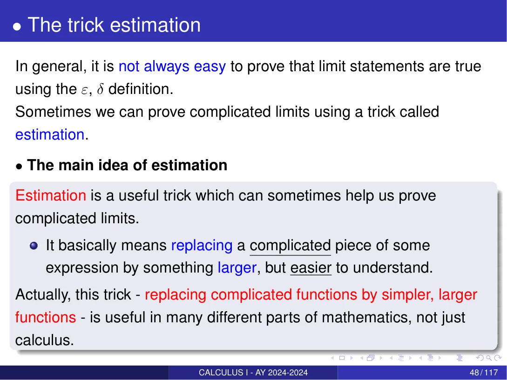
Proving a limit with ε–δ is easy for a line (slide 41 of Lecture 1) but hard in general. The trick is estimation: replace a complicated factor by something larger but simpler, so the inequality we need still follows. The idea is used all over mathematics, not only in calculus.
Chứng minh giới hạn bằng ε–δ thì dễ với đường thẳng (slide 41 của Bài 1) nhưng khó trong trường hợp tổng quát. Mẹo là đánh giá: thay một thừa số phức tạp bằng một đại lượng lớn hơn nhưng đơn giản hơn sao cho bất đẳng thức cần chứng minh vẫn suy ra được. Ý tưởng này dùng khắp nơi trong toán học, không chỉ trong giải tích.
Example $\lim_{x\to2}x^3=8$: factor first · Ví dụ $\lim_{x\to2}x^3=8$: phân tích thành thừa số trước
★★★ Core · Cốt lõi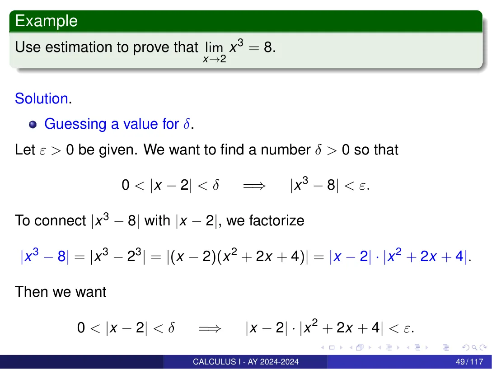
Scratch work. We need $|x^3-8|<\varepsilon$ whenever $0<|x-2|<\delta$. To link $|x^3-8|$ with $|x-2|$, factorise: $x^3-8=(x-2)(x^2+2x+4)$. So $|x^3-8|=|x-2|\cdot|x^2+2x+4|$: a small factor we control, times an extra factor we must bound.
Phần nháp. Cần $|x^3-8|<\varepsilon$ mỗi khi $0<|x-2|<\delta$. Để nối $|x^3-8|$ với $|x-2|$, phân tích thành thừa số: $x^3-8=(x-2)(x^2+2x+4)$. Vậy $|x^3-8|=|x-2|\cdot|x^2+2x+4|$: một thừa số nhỏ mà ta kiểm soát được, nhân với một thừa số phụ cần được chặn.
Bound the extra factor by a constant · Chặn thừa số phụ bằng một hằng số
★★★ Core · Cốt lõi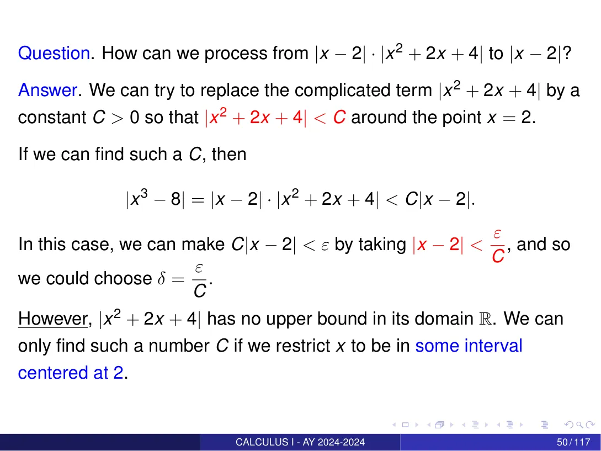
How do we get rid of $|x^2+2x+4|$? Replace it by a constant $C$ with $|x^2+2x+4|<C$ near $2$. Then $|x^3-8|<C|x-2|$ and $\delta=\varepsilon/C$ works. The catch: this factor has no upper bound on all of $\mathbb R$, so we may only look at $x$ in an interval centred at $2$.
Làm sao loại bỏ $|x^2+2x+4|$? Thay nó bằng một hằng số $C$ sao cho $|x^2+2x+4|<C$ gần $2$. Khi đó $|x^3-8|<C|x-2|$ và $\delta=\varepsilon/C$ dùng được. Vướng mắc: thừa số này không bị chặn trên toàn $\mathbb R$, nên ta chỉ được xét $x$ trong một khoảng có tâm tại $2$.
Restrict to $|x-2|<1$ and take a minimum · Giới hạn $|x-2|<1$ và lấy giá trị nhỏ nhất
★★★ Core · Cốt lõi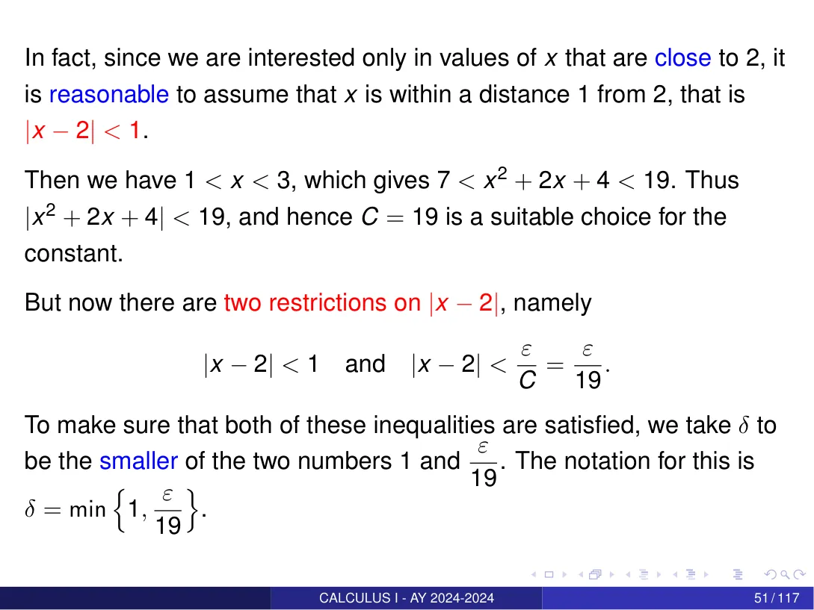
We only care about $x$ near $2$, so assume $|x-2|<1$, i.e. $1<x<3$. Then $7<x^2+2x+4<19$ (the expression increases for $x>0$, from $7$ at $x=1$ to $19$ at $x=3$), so $C=19$. Now $x$ obeys two restrictions, $|x-2|<1$ and $|x-2|<\frac\varepsilon{19}$, so take the smaller one: $\delta=\min\left\{1,\frac\varepsilon{19}\right\}$.
Ta chỉ quan tâm $x$ gần $2$, nên giả sử $|x-2|<1$, tức $1<x<3$. Khi đó $7<x^2+2x+4<19$ (biểu thức tăng khi $x>0$, từ $7$ tại $x=1$ đến $19$ tại $x=3$), nên $C=19$. Bây giờ $x$ chịu hai ràng buộc, $|x-2|<1$ và $|x-2|<\frac\varepsilon{19}$, nên lấy số nhỏ hơn: $\delta=\min\left\{1,\frac\varepsilon{19}\right\}$.
The proof that this δ works · Chứng minh rằng δ này dùng được
★★★ Core · Cốt lõi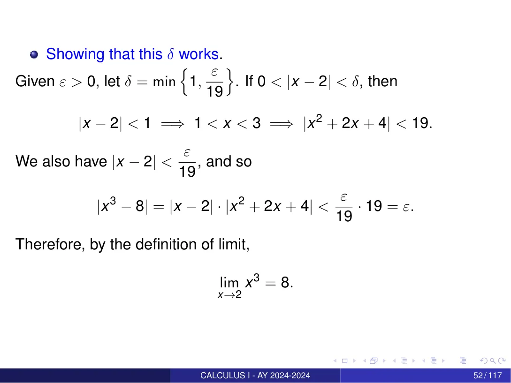
Write it forwards. Given $\varepsilon>0$ let $\delta=\min\{1,\frac\varepsilon{19}\}$. If $0<|x-2|<\delta$ then $|x-2|<1\Rightarrow1<x<3\Rightarrow|x^2+2x+4|<19$, and also $|x-2|<\frac\varepsilon{19}$. Hence $|x^3-8|=|x-2|\,|x^2+2x+4|<\frac\varepsilon{19}\cdot19=\varepsilon$. The guessing of $\delta$ stays in the scratch work; the proof only verifies it.
Viết theo chiều xuôi. Cho $\varepsilon>0$, đặt $\delta=\min\{1,\frac\varepsilon{19}\}$. Nếu $0<|x-2|<\delta$ thì $|x-2|<1\Rightarrow1<x<3\Rightarrow|x^2+2x+4|<19$, và đồng thời $|x-2|<\frac\varepsilon{19}$. Do đó $|x^3-8|=|x-2|\,|x^2+2x+4|<\frac\varepsilon{19}\cdot19=\varepsilon$. Việc đoán $\delta$ nằm ở phần nháp; phần chứng minh chỉ kiểm tra lại nó.
Use estimation to find $\delta$ for $\lim_{x\to3}x^2=9$.
Dùng phương pháp đánh giá để tìm $\delta$ cho $\lim_{x\to3}x^2=9$.
Answer and solution · Đáp án và lời giải
Answer · Đáp án: $\delta=\min\left\{1,\dfrac\varepsilon7\right\}$
$|x^2-9|=|x-3||x+3|$. If $|x-3|<1$ then $2<x<4$, so $5<x+3<7$ and $|x+3|<7$. Hence $|x^2-9|<7|x-3|<\varepsilon$ when also $|x-3|<\frac\varepsilon7$.
$|x^2-9|=|x-3||x+3|$. Nếu $|x-3|<1$ thì $2<x<4$, nên $5<x+3<7$ và $|x+3|<7$. Do đó $|x^2-9|<7|x-3|<\varepsilon$ khi thêm $|x-3|<\frac\varepsilon7$.
Use estimation to find $\delta$ for $\lim_{x\to1}x^3=1$.
Dùng phương pháp đánh giá để tìm $\delta$ cho $\lim_{x\to1}x^3=1$.
Answer and solution · Đáp án và lời giải
Answer · Đáp án: $\delta=\min\left\{1,\dfrac\varepsilon7\right\}$
$x^3-1=(x-1)(x^2+x+1)$. If $|x-1|<1$ then $0<x<2$ and $x^2+x+1<7$. So $|x^3-1|<7|x-1|<\varepsilon$ when $|x-1|<\frac\varepsilon7$.
$x^3-1=(x-1)(x^2+x+1)$. Nếu $|x-1|<1$ thì $0<x<2$ và $x^2+x+1<7$. Vậy $|x^3-1|<7|x-1|<\varepsilon$ khi $|x-1|<\frac\varepsilon7$.
Comment: use the limit laws instead · Nhận xét: dùng quy tắc giới hạn thay vì định nghĩa
★★ Important · Quan trọng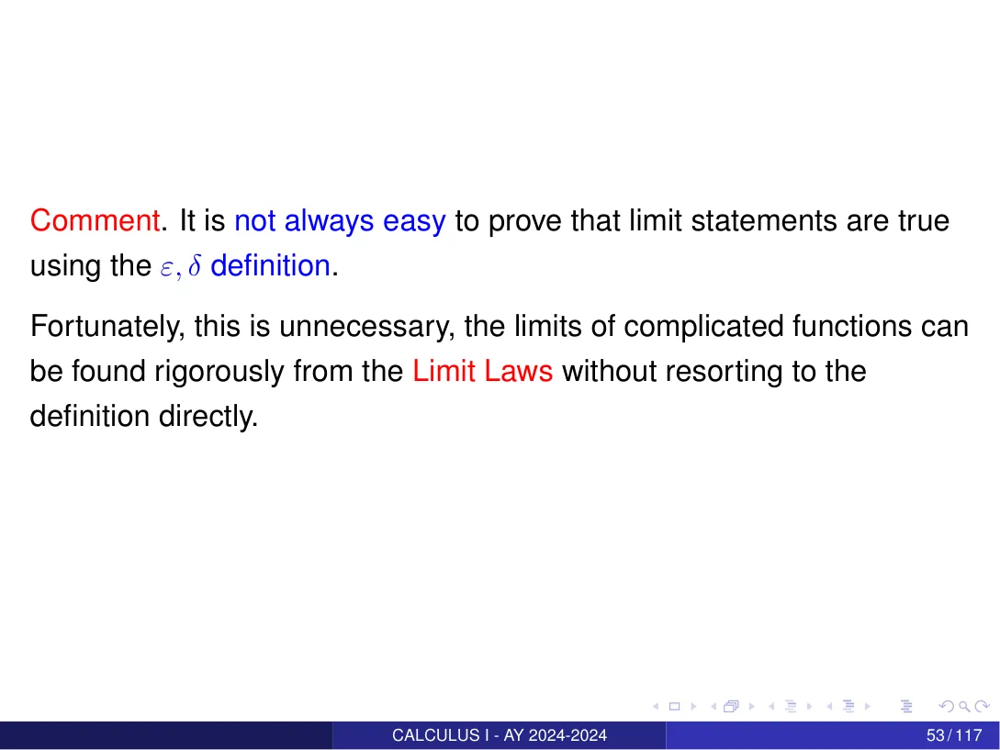
The ε–δ method is rigorous but heavy. The slide's message: for complicated functions we rarely go back to the definition; the Limit Laws on the next slide let us find such limits rigorously and quickly.
Phương pháp ε–δ chặt chẽ nhưng nặng nề. Thông điệp của slide: với các hàm phức tạp ta hiếm khi quay lại định nghĩa; các quy tắc giới hạn ở slide sau cho phép tìm những giới hạn như vậy một cách chặt chẽ và nhanh chóng.
The limit laws · Các quy tắc giới hạn
★★★ Core · Cốt lõi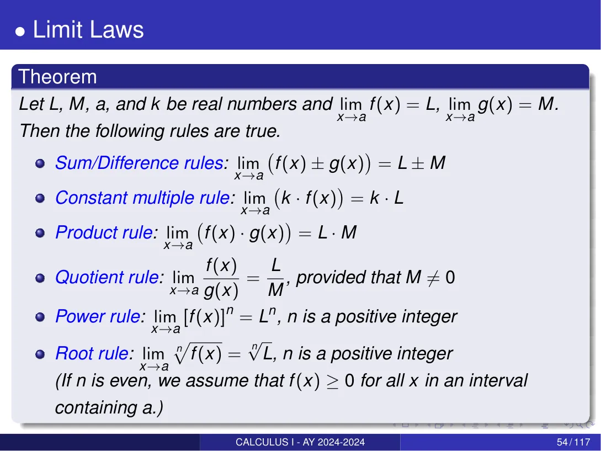
Assume $\lim f=L$ and $\lim g=M$. Then limits respect the sum and difference, constant multiples, products, quotients (only if $M\ne0$), powers and roots (for an even root we need $f\ge0$ near $a$). In words: the limit of an expression is the expression of the limits, as long as nothing illegal happens: no division by $0$, no even root of a negative number.
Giả sử $\lim f=L$ và $\lim g=M$. Khi đó giới hạn "đi qua" tổng và hiệu, hằng số nhân, tích, thương (chỉ khi $M\ne0$), lũy thừa và căn (với căn bậc chẵn cần $f\ge0$ gần $a$). Nói bằng lời: giới hạn của một biểu thức bằng biểu thức của các giới hạn, miễn là không có điều gì bất hợp lệ: không chia cho $0$, không lấy căn chẵn của số âm.
This one slide is the toolbox for almost every limit in the course; the exam rarely asks for an ε–δ proof but constantly asks for a limit computed with these rules.
Slide này là bộ công cụ cho gần như mọi giới hạn trong môn; đề thi hiếm khi hỏi chứng minh ε–δ nhưng luôn hỏi những giới hạn tính bằng các quy tắc này.
Compute $\displaystyle\lim_{x\to2}\frac{x^3+3x}{x^2-1}$, naming the laws used.
Tính $\displaystyle\lim_{x\to2}\frac{x^3+3x}{x^2-1}$ và nêu tên các quy tắc đã dùng.
Answer and solution · Đáp án và lời giải
Answer · Đáp án: $\dfrac{14}3$
Denominator limit is $2^2-1=3\ne0$, so the quotient rule applies: $\frac{\lim(x^3+3x)}{\lim(x^2-1)}=\frac{8+6}{4-1}=\frac{14}3$ (sum, constant-multiple and power rules inside).
Giới hạn của mẫu là $2^2-1=3\ne0$ nên dùng được quy tắc thương: $\frac{\lim(x^3+3x)}{\lim(x^2-1)}=\frac{8+6}{4-1}=\frac{14}3$ (bên trong dùng quy tắc tổng, hằng số nhân và lũy thừa).
Compute $\displaystyle\lim_{x\to4}\sqrt{x^2+9}$.
Tính $\displaystyle\lim_{x\to4}\sqrt{x^2+9}$.
Answer and solution · Đáp án và lời giải
Answer · Đáp án: $5$
Root rule (the inside tends to $25\ge0$): $\sqrt{\lim(x^2+9)}=\sqrt{25}=5$.
Quy tắc căn (biểu thức trong căn tiến tới $25\ge0$): $\sqrt{\lim(x^2+9)}=\sqrt{25}=5$.
The triangle inequality · Bất đẳng thức tam giác
★★ Important · Quan trọng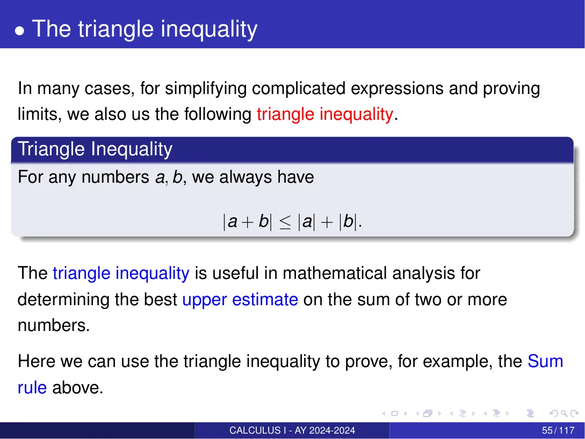
$|a+b|\le|a|+|b|$ for all numbers: the size of a sum is at most the sum of the sizes. It is the tool for bounding sums in proofs, for instance of the Sum rule: $|(f+g)-(L+M)|\le|f-L|+|g-M|<\frac\varepsilon2+\frac\varepsilon2$.
$|a+b|\le|a|+|b|$ với mọi số: độ lớn của tổng không vượt quá tổng các độ lớn. Đây là công cụ để chặn các tổng trong chứng minh, chẳng hạn chứng minh quy tắc tổng: $|(f+g)-(L+M)|\le|f-L|+|g-M|<\frac\varepsilon2+\frac\varepsilon2$.
When does equality $|a+b|=|a|+|b|$ hold?
Khi nào đẳng thức $|a+b|=|a|+|b|$ xảy ra?
Answer and solution · Đáp án và lời giải
Answer · Đáp án: when $a$ and $b$ have the same sign (or one is $0$), i.e. $ab\ge0$
For $a=-2,b=3$: $|1|=1<5$. For $a=-2,b=-3$ or $a=2,b=3$: $5=5$. Opposite signs cancel and make the sum smaller.
Với $a=-2,b=3$: $|1|=1<5$. Với $a=-2,b=-3$ hoặc $a=2,b=3$: $5=5$. Hai số trái dấu triệt tiêu nhau nên tổng nhỏ hơn.
Direct substitution · Thế trực tiếp
★★★ Core · Cốt lõi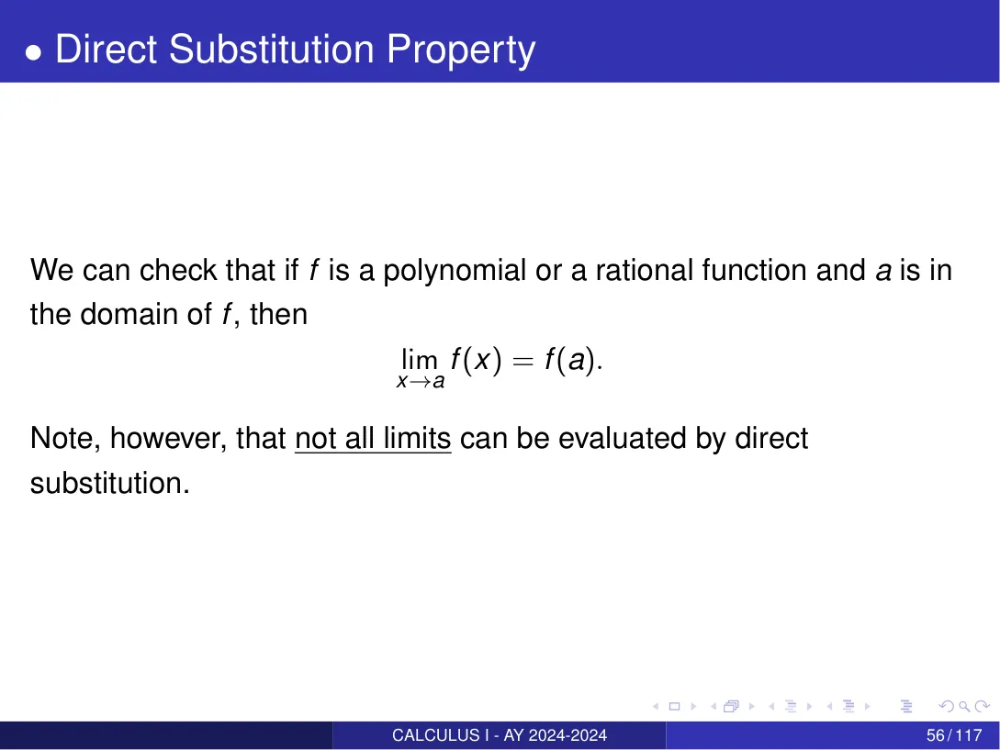
If $f$ is a polynomial or a rational function and $a$ is in its domain, then $\lim_{x\to a}f(x)=f(a)$. So the first move with any limit is to plug in the number. If the result is a number, you are done; if it is $\frac00$, that signals more work (factor, or multiply by a conjugate). The slide warns that not every limit can be found by substitution.
Nếu $f$ là đa thức hoặc hàm hữu tỉ và $a$ thuộc tập xác định thì $\lim_{x\to a}f(x)=f(a)$. Vậy bước đầu tiên với mọi giới hạn là thế số vào. Nếu ra một số thì xong; nếu ra $\frac00$ thì cần làm thêm (phân tích thừa số hoặc nhân lượng liên hợp). Slide lưu ý không phải giới hạn nào cũng tìm được bằng cách thế.
Compute $\displaystyle\lim_{x\to-1}\frac{x^2-3x+2}{x+2}$.
Tính $\displaystyle\lim_{x\to-1}\frac{x^2-3x+2}{x+2}$.
Answer and solution · Đáp án và lời giải
Answer · Đáp án: $6$
$-1$ is in the domain (the denominator is $1\ne0$): substitute, $\frac{1+3+2}{1}=6$.
$-1$ thuộc tập xác định (mẫu bằng $1\ne0$): thế vào, $\frac{1+3+2}{1}=6$.
Compute $\displaystyle\lim_{x\to3}\frac{x^2-9}{x-3}$ (substitution gives $\frac00$).
Tính $\displaystyle\lim_{x\to3}\frac{x^2-9}{x-3}$ (thế vào cho $\frac00$).
Answer and solution · Đáp án và lời giải
Answer · Đáp án: $6$
Factor and cancel: $\frac{(x-3)(x+3)}{x-3}=x+3$ for $x\ne3$, and $x+3\to6$.
Phân tích và rút gọn: $\frac{(x-3)(x+3)}{x-3}=x+3$ với $x\ne3$, và $x+3\to6$.
Example: rationalising the numerator · Ví dụ: nhân lượng liên hợp ở tử số
★★★ Core · Cốt lõi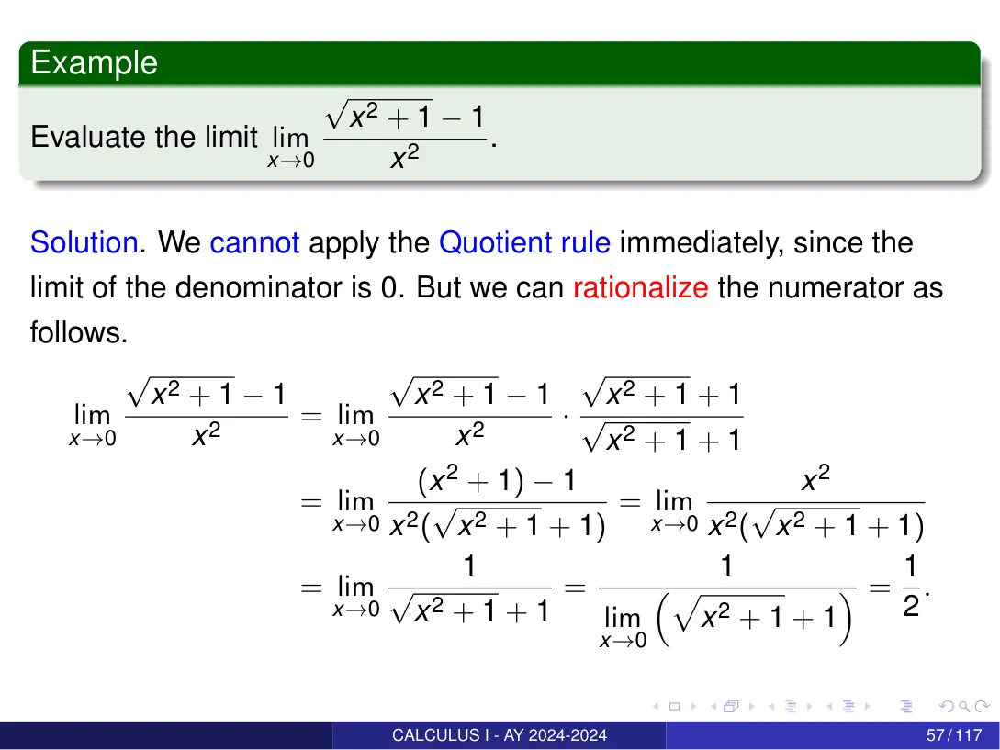
$\lim_{x\to0}\frac{\sqrt{x^2+1}-1}{x^2}$ gives $\frac00$, and the quotient rule fails because the denominator tends to $0$. The numerator has a root, so multiply top and bottom by the conjugate $\sqrt{x^2+1}+1$: the numerator becomes $(x^2+1)-1=x^2$. Cancel $x^2$ and substitute: $\frac1{\sqrt{0+1}+1}=\frac12$.
$\lim_{x\to0}\frac{\sqrt{x^2+1}-1}{x^2}$ cho $\frac00$, và quy tắc thương không dùng được vì mẫu tiến tới $0$. Tử có căn nên nhân cả tử và mẫu với lượng liên hợp $\sqrt{x^2+1}+1$: tử thành $(x^2+1)-1=x^2$. Rút gọn $x^2$ rồi thế: $\frac1{\sqrt{0+1}+1}=\frac12$.
Compute $\displaystyle\lim_{x\to0}\frac{\sqrt{x+9}-3}{x}$.
Tính $\displaystyle\lim_{x\to0}\frac{\sqrt{x+9}-3}{x}$.
Answer and solution · Đáp án và lời giải
Answer · Đáp án: $\dfrac16$
Multiply by $\sqrt{x+9}+3$: numerator $(x+9)-9=x$, so the quotient is $\frac1{\sqrt{x+9}+3}\to\frac1{3+3}=\frac16$.
Nhân với $\sqrt{x+9}+3$: tử thành $(x+9)-9=x$, nên thương là $\frac1{\sqrt{x+9}+3}\to\frac1{3+3}=\frac16$.
Compute $\displaystyle\lim_{x\to4}\frac{\sqrt x-2}{x-4}$.
Tính $\displaystyle\lim_{x\to4}\frac{\sqrt x-2}{x-4}$.
Answer and solution · Đáp án và lời giải
Answer · Đáp án: $\dfrac14$
Multiply by $\sqrt x+2$: numerator $x-4$, so the quotient is $\frac1{\sqrt x+2}\to\frac14$.
Nhân với $\sqrt x+2$: tử thành $x-4$, nên thương là $\frac1{\sqrt x+2}\to\frac14$.
The one-sided limits theorem · Định lý về giới hạn một phía
★★★ Core · Cốt lõi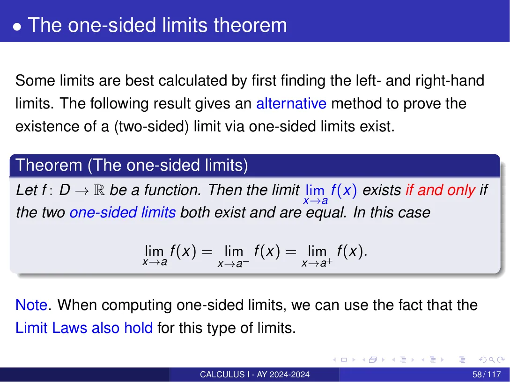
The limit exists exactly when both one-sided limits exist and are equal, and then all three numbers coincide. The Limit Laws also hold for one-sided limits. This is the standard method for piecewise functions and for $|x|$.
Giới hạn tồn tại khi và chỉ khi cả hai giới hạn một phía tồn tại và bằng nhau, và khi đó cả ba số trùng nhau. Các quy tắc giới hạn cũng đúng cho giới hạn một phía. Đây là phương pháp chuẩn cho hàm xác định theo từng khoảng và cho $|x|$.
Find $k$ so that $\lim_{x\to1}f(x)$ exists, where $f(x)=\begin{cases}3x+k,&x<1\\x^2+2,&x\ge1.\end{cases}$
Tìm $k$ để $\lim_{x\to1}f(x)$ tồn tại, với $f(x)=\begin{cases}3x+k,&x<1\\x^2+2,&x\ge1.\end{cases}$
Answer and solution · Đáp án và lời giải
Answer · Đáp án: $k=0$
Left limit $3+k$, right limit $1+2=3$. They must be equal: $3+k=3$.
Giới hạn trái $3+k$, giới hạn phải $1+2=3$. Hai giới hạn phải bằng nhau: $3+k=3$.
Proving that a limit does not exist · Chứng minh giới hạn không tồn tại
★★★ Core · Cốt lõi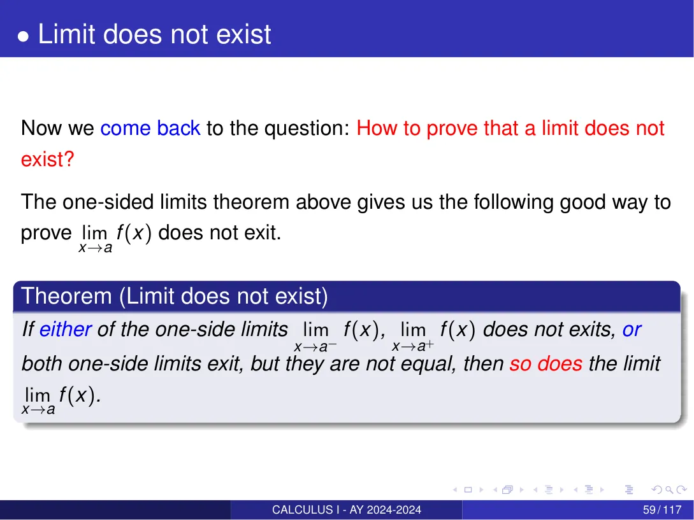
This closes the question left open in Lecture 1. If one of the one-sided limits does not exist, or both exist but differ, then the limit does not exist. Tell the student the habit: for $|x|$, piecewise formulas or $\frac1x$ at $0$, compute left and right separately.
Slide này khép lại câu hỏi bỏ ngỏ ở Bài 1. Nếu một trong hai giới hạn một phía không tồn tại, hoặc cả hai tồn tại nhưng khác nhau, thì giới hạn không tồn tại. Hình thành thói quen cho bạn: với $|x|$, công thức theo khoảng hoặc $\frac1x$ tại $0$, hãy tính riêng bên trái và bên phải.
Show that $\displaystyle\lim_{x\to2}\frac{|x-2|}{x-2}$ does not exist.
Chứng tỏ $\displaystyle\lim_{x\to2}\frac{|x-2|}{x-2}$ không tồn tại.
Answer and solution · Đáp án và lời giải
Answer · Đáp án: right limit $1$, left limit $-1$
For $x>2$, $|x-2|=x-2$ so the quotient is $1$. For $x<2$, $|x-2|=-(x-2)$ so it is $-1$. The one-sided limits differ.
Với $x>2$, $|x-2|=x-2$ nên thương bằng $1$. Với $x<2$, $|x-2|=-(x-2)$ nên thương bằng $-1$. Hai giới hạn một phía khác nhau nên giới hạn không tồn tại.
Example: $\lim_{x\to0}|x|/x$, the one-sided limits · Ví dụ: $\lim_{x\to0}|x|/x$, các giới hạn một phía
★★★ Core · Cốt lõi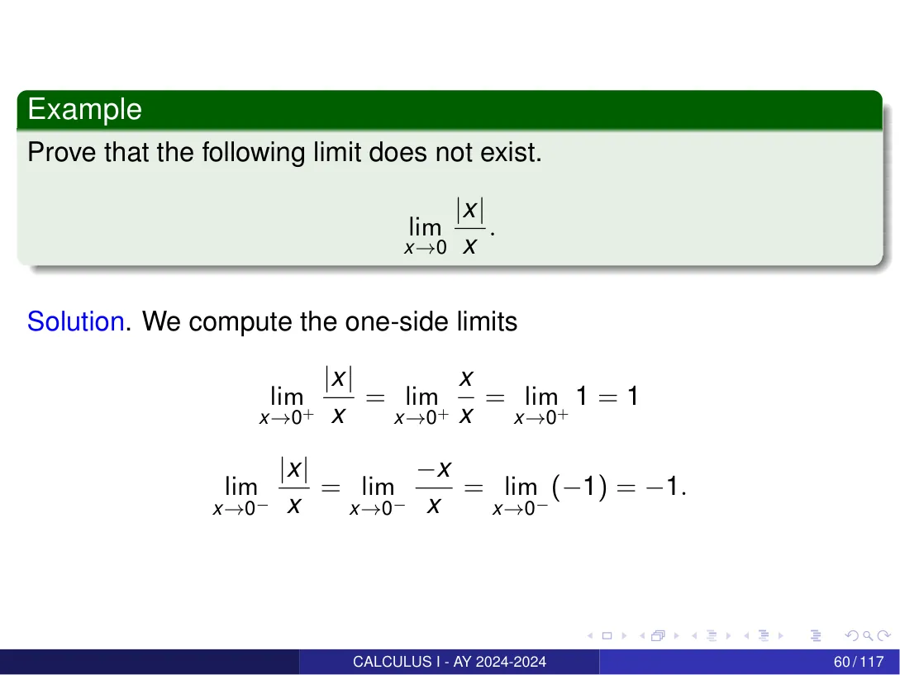
Right side: for $x>0$, $|x|=x$, so $\frac{|x|}x=1$ and the right limit is $1$. Left side: for $x<0$, $|x|=-x$, so $\frac{|x|}x=-1$ and the left limit is $-1$. Notice that we replace $|x|$ by the correct formula before taking the limit.
Bên phải: với $x>0$, $|x|=x$ nên $\frac{|x|}x=1$ và giới hạn phải bằng $1$. Bên trái: với $x<0$, $|x|=-x$ nên $\frac{|x|}x=-1$ và giới hạn trái bằng $-1$. Chú ý ta thay $|x|$ bằng công thức đúng trước khi lấy giới hạn.
Conclusion: the limit does not exist · Kết luận: giới hạn không tồn tại
★★ Important · Quan trọng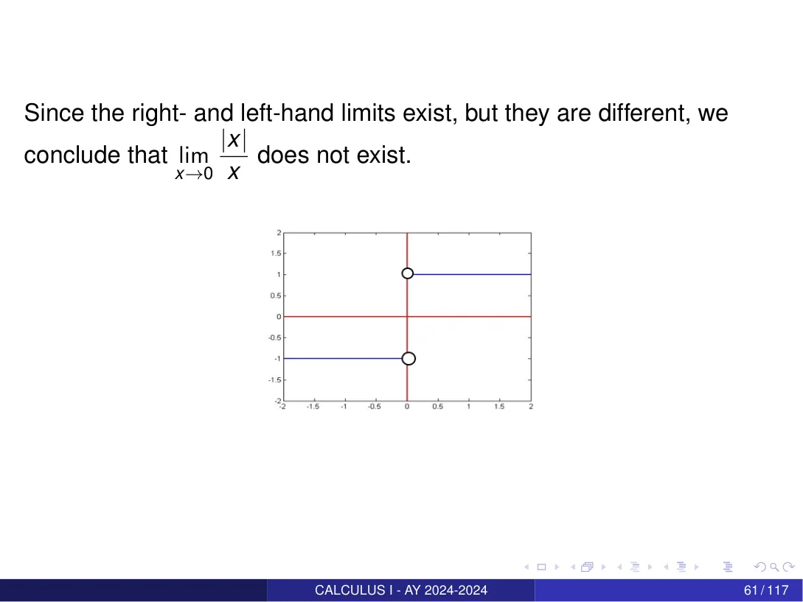
Both one-sided limits exist, but $1\ne-1$, so $\lim_{x\to0}\frac{|x|}x$ does not exist. Remember the wording: "the limit does not exist because the one-sided limits are different", not just "it is undefined".
Cả hai giới hạn một phía đều tồn tại, nhưng $1\ne-1$, nên $\lim_{x\to0}\frac{|x|}x$ không tồn tại. Nhớ cách diễn đạt: "giới hạn không tồn tại vì hai giới hạn một phía khác nhau", chứ không chỉ nói "không xác định".
Limits preserve inequalities · Giới hạn bảo toàn bất đẳng thức
★★ Important · Quan trọng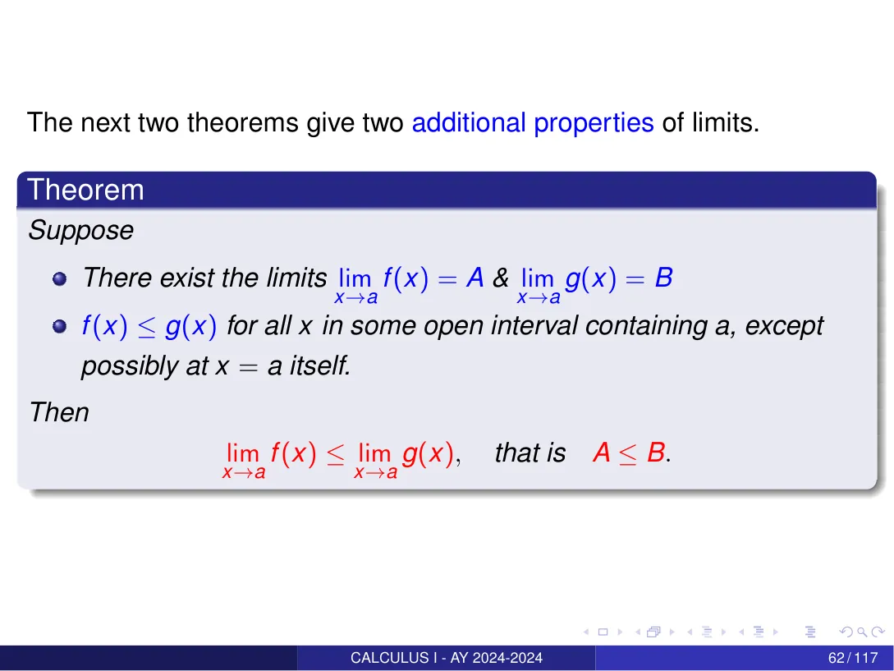
If $f(x)\le g(x)$ near $a$ and both limits exist, then $\lim f\le\lim g$. Warning: strict inequality is not preserved. For example $0<x^2$ for $x\ne0$, yet both limits at $0$ equal $0$.
Nếu $f(x)\le g(x)$ gần $a$ và cả hai giới hạn tồn tại thì $\lim f\le\lim g$. Cảnh báo: bất đẳng thức ngặt không được bảo toàn. Ví dụ $0<x^2$ với $x\ne0$ nhưng cả hai giới hạn tại $0$ đều bằng $0$.
Is it true that $f(x)<g(x)$ near $a$ implies $\lim f<\lim g$? Give a counterexample.
Có đúng là $f(x)<g(x)$ gần $a$ thì $\lim f<\lim g$ không? Cho phản ví dụ.
Answer and solution · Đáp án và lời giải
Answer · Đáp án: No: $f(x)=0$, $g(x)=x^2$ at $a=0$
For $x\ne0$ we have $0<x^2$, but $\lim_{x\to0}0=0=\lim_{x\to0}x^2$: only $\le$ survives.
Với $x\ne0$ ta có $0<x^2$, nhưng $\lim_{x\to0}0=0=\lim_{x\to0}x^2$: chỉ còn $\le$ được bảo toàn.
The Squeeze Theorem · Định lý kẹp
★★★ Core · Cốt lõi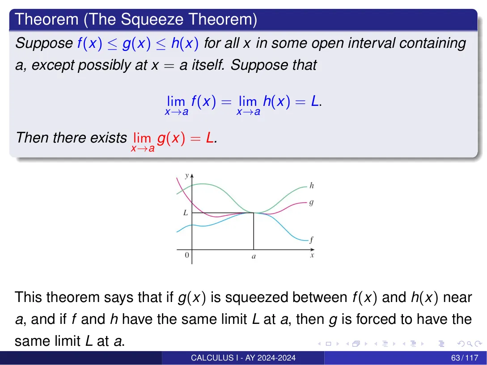
If $f\le g\le h$ near $a$ and $f$ and $h$ have the same limit $L$ at $a$, then $g$ has the limit $L$ too: $g$ is squeezed between two functions that meet at $L$. Draw the picture: a sandwich. Note that the theorem also proves existence of $\lim g$, which the limit laws cannot do.
Nếu $f\le g\le h$ gần $a$ và $f$, $h$ có cùng giới hạn $L$ tại $a$ thì $g$ cũng có giới hạn $L$: $g$ bị kẹp giữa hai hàm gặp nhau tại $L$. Vẽ hình cái bánh sandwich. Lưu ý định lý này còn chứng minh sự tồn tại của $\lim g$, điều mà các quy tắc giới hạn không làm được.
It is the only tool for oscillating factors such as $\sin\frac1x$, and it is behind the key limit $\frac{\sin x}x\to1$ that gives the derivative of sine.
Đây là công cụ duy nhất cho các thừa số dao động như $\sin\frac1x$, và nằm sau giới hạn then chốt $\frac{\sin x}x\to1$ dùng để tính đạo hàm của sin.
Example: $\lim_{x\to0}x\sin\frac1x$ · Ví dụ: $\lim_{x\to0}x\sin\frac1x$
★★★ Core · Cốt lõi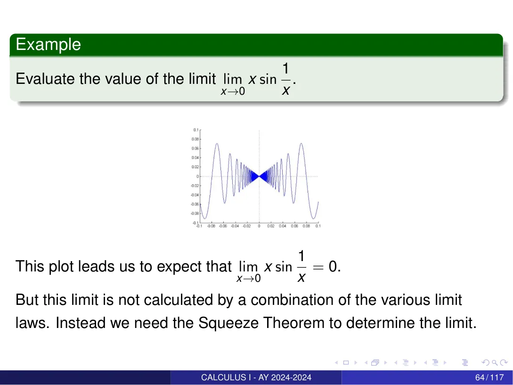
The plot shows an oscillation that shrinks towards $0$. We cannot use the product rule because $\lim\sin\frac1x$ does not exist. The graph suggests the answer $0$; the Squeeze Theorem proves it.
Đồ thị cho thấy dao động thu nhỏ dần về $0$. Không dùng được quy tắc tích vì $\lim\sin\frac1x$ không tồn tại. Đồ thị gợi ý đáp số $0$; định lý kẹp chứng minh điều đó.
Find $\displaystyle\lim_{x\to0}x^2\cos\frac1x$.
Tìm $\displaystyle\lim_{x\to0}x^2\cos\frac1x$.
Answer and solution · Đáp án và lời giải
Answer · Đáp án: $0$
Since $-1\le\cos\frac1x\le1$, we get $-x^2\le x^2\cos\frac1x\le x^2$, and both bounds tend to $0$.
Vì $-1\le\cos\frac1x\le1$ nên $-x^2\le x^2\cos\frac1x\le x^2$, và cả hai cận đều tiến tới $0$.
Choosing the two bounds · Chọn hai hàm chặn
★★★ Core · Cốt lõi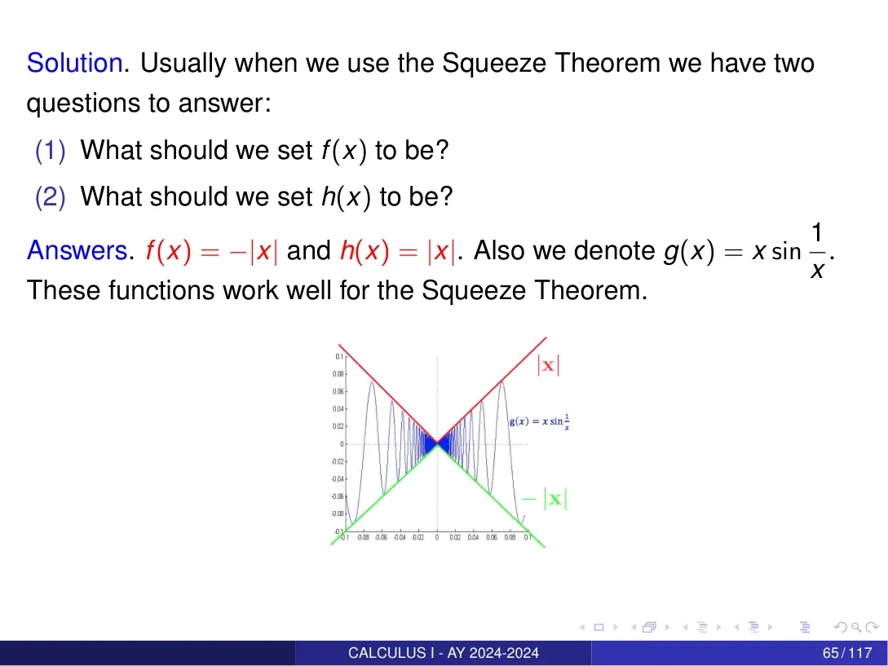
Two questions in every squeeze problem: what is the lower function $f$, and what is the upper function $h$? Here $|\sin\frac1x|\le1$ gives $|x\sin\frac1x|\le|x|$, so take $f(x)=-|x|$ and $h(x)=|x|$ with $g(x)=x\sin\frac1x$. Both bounds tend to $0$, so $g\to0$.
Mọi bài dùng định lý kẹp đều có hai câu hỏi: hàm chặn dưới $f$ là gì, hàm chặn trên $h$ là gì? Ở đây $|\sin\frac1x|\le1$ cho $|x\sin\frac1x|\le|x|$, nên lấy $f(x)=-|x|$ và $h(x)=|x|$ với $g(x)=x\sin\frac1x$. Cả hai cận đều tiến tới $0$ nên $g\to0$.
Self-study notice: extensions of the limit notion · Thông báo tự học: mở rộng khái niệm giới hạn
★ Context · Bổ trợ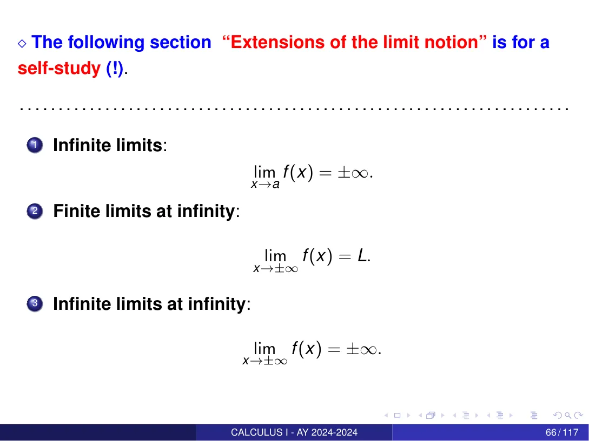
The lecturer marks this part as self-study: infinite limits $\lim f=\pm\infty$, finite limits at infinity $\lim_{x\to\pm\infty}f=L$, and infinite limits at infinity. Skim the formal definitions; focus on the pictures and on computing.
Giảng viên đánh dấu phần này là tự học: giới hạn vô cực $\lim f=\pm\infty$, giới hạn hữu hạn tại vô cực $\lim_{x\to\pm\infty}f=L$, và giới hạn vô cực tại vô cực. Lướt qua các định nghĩa hình thức; tập trung vào hình vẽ và việc tính toán.
Neighbourhoods · Lân cận
★ Context · Bổ trợ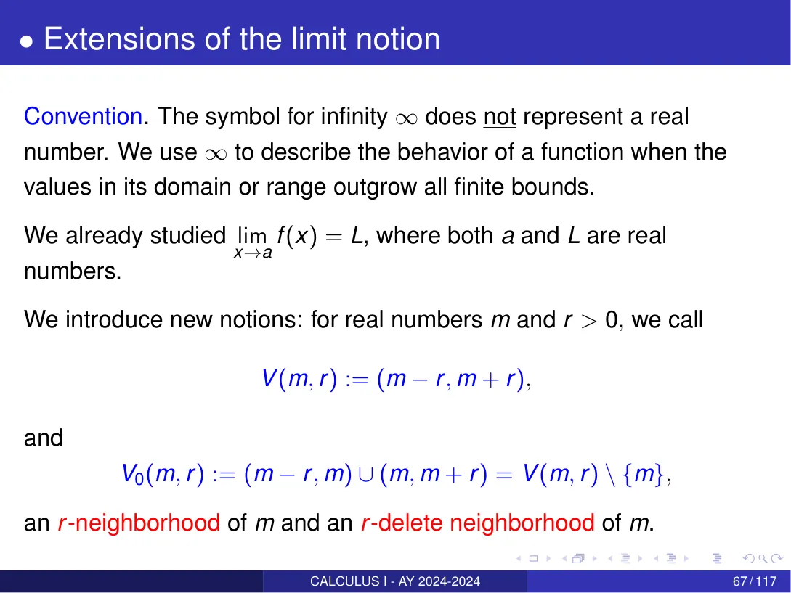
Convention: $\infty$ is not a real number; it describes values that outgrow every bound. For a real $m$ and $r>0$, $V(m,r)=(m-r,m+r)$ is the $r$-neighbourhood of $m$, and removing the centre gives the deleted neighbourhood $V_0(m,r)$.
Quy ước: $\infty$ không phải là số thực; nó mô tả các giá trị lớn hơn mọi cận. Với số thực $m$ và $r>0$, $V(m,r)=(m-r,m+r)$ là lân cận bán kính $r$ của $m$, và bỏ tâm đi ta được lân cận bỏ điểm $V_0(m,r)$.
The ε–δ definition with neighbourhoods · Định nghĩa ε–δ bằng ngôn ngữ lân cận
★ Context · Bổ trợ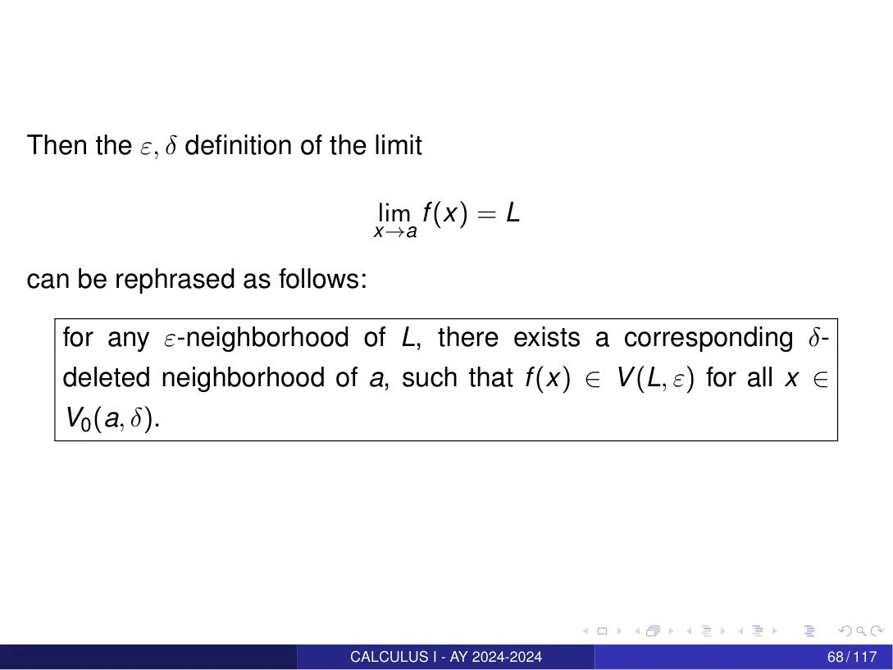
The old definition rephrased: for every $\varepsilon$-neighbourhood of $L$ there is a $\delta$-deleted neighbourhood of $a$ whose points are all sent into the $\varepsilon$-neighbourhood. This form is easy to adapt when $a$ or $L$ is infinite.
Định nghĩa cũ được phát biểu lại: với mọi lân cận $\varepsilon$ của $L$ tồn tại lân cận bỏ điểm bán kính $\delta$ của $a$ sao cho mọi điểm của nó được ánh xạ vào lân cận $\varepsilon$. Dạng này dễ mở rộng khi $a$ hoặc $L$ là vô cực.
Neighbourhoods of infinity · Lân cận của vô cực
★ Context · Bổ trợ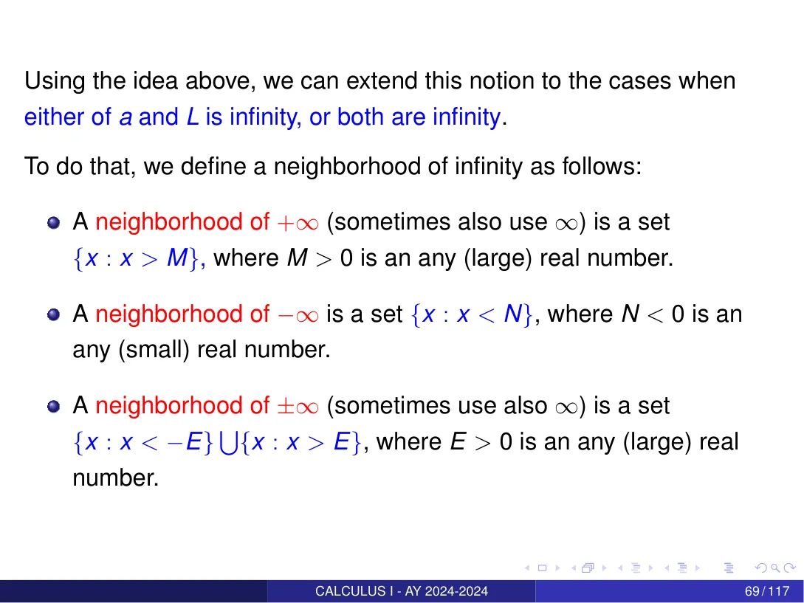
A neighbourhood of $+\infty$ is $\{x:x>M\}$ for a large $M$; of $-\infty$ it is $\{x:x<N\}$ for a very negative $N$; of $\pm\infty$ it is $\{x:|x|>E\}$. "Close to infinity" simply means "very large".
Lân cận của $+\infty$ là $\{x:x>M\}$ với $M$ lớn; của $-\infty$ là $\{x:x<N\}$ với $N$ rất âm; của $\pm\infty$ là $\{x:|x|>E\}$. "Gần vô cực" đơn giản nghĩa là "rất lớn".
The three new cases · Ba trường hợp mới
★ Context · Bổ trợ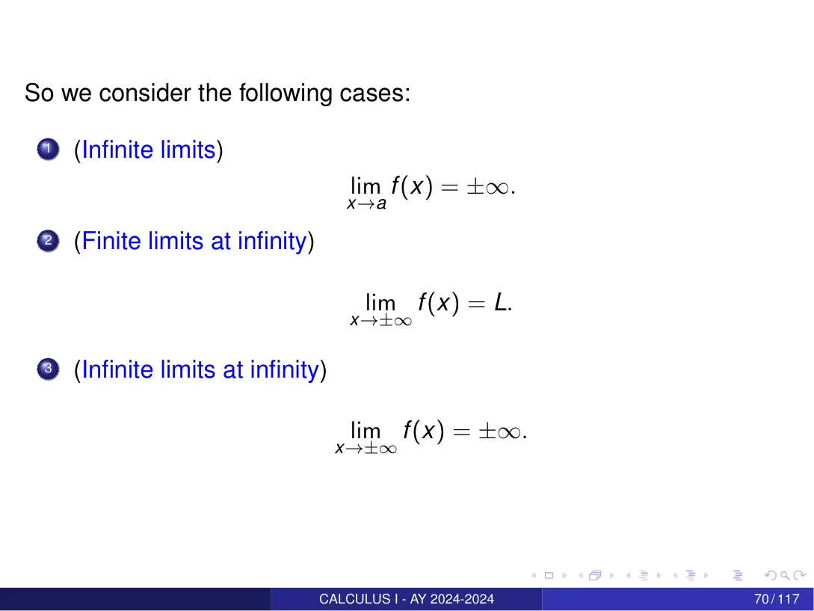
So we consider three new situations: (1) infinite limits $\lim_{x\to a}f=\pm\infty$; (2) finite limits at infinity $\lim_{x\to\pm\infty}f=L$; (3) infinite limits at infinity $\lim_{x\to\pm\infty}f=\pm\infty$.
Vậy ta xét ba tình huống mới: (1) giới hạn vô cực $\lim_{x\to a}f=\pm\infty$; (2) giới hạn hữu hạn tại vô cực $\lim_{x\to\pm\infty}f=L$; (3) giới hạn vô cực tại vô cực $\lim_{x\to\pm\infty}f=\pm\infty$.
Definition of an infinite limit · Định nghĩa giới hạn vô cực
★★ Important · Quan trọng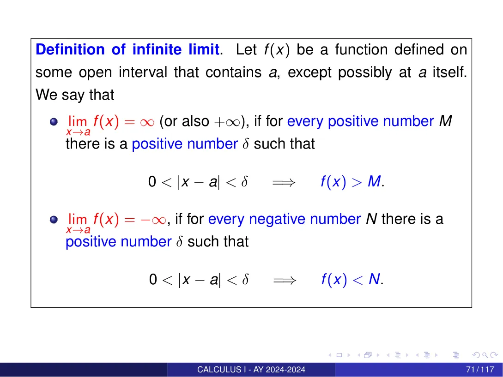
$\lim_{x\to a}f(x)=\infty$ means: for every $M>0$ there is a $\delta>0$ with $0<|x-a|<\delta\Rightarrow f(x)>M$. The tolerance is now "larger than $M$": however big a number you name, $f$ eventually exceeds it. For $-\infty$, use $f(x)<N$ with $N<0$.
$\lim_{x\to a}f(x)=\infty$ nghĩa là: với mọi $M>0$ tồn tại $\delta>0$ sao cho $0<|x-a|<\delta\Rightarrow f(x)>M$. Sai số cho phép giờ là "lớn hơn $M$": bạn nêu số lớn đến đâu thì $f$ cuối cùng cũng vượt qua. Với $-\infty$, dùng $f(x)<N$ với $N<0$.
Prove $\displaystyle\lim_{x\to0}\frac1{x^2}=\infty$ from the definition.
Chứng minh $\displaystyle\lim_{x\to0}\frac1{x^2}=\infty$ từ định nghĩa.
Answer and solution · Đáp án và lời giải
Answer · Đáp án: Choose $\delta=\dfrac1{\sqrt M}$.
Given $M>0$ let $\delta=\frac1{\sqrt M}$. If $0<|x|<\delta$ then $x^2<\frac1M$, so $\frac1{x^2}>M$.
Cho $M>0$, đặt $\delta=\frac1{\sqrt M}$. Nếu $0<|x|<\delta$ thì $x^2<\frac1M$, nên $\frac1{x^2}>M$.
One-sided infinite limits · Giới hạn vô cực một phía
★★ Important · Quan trọng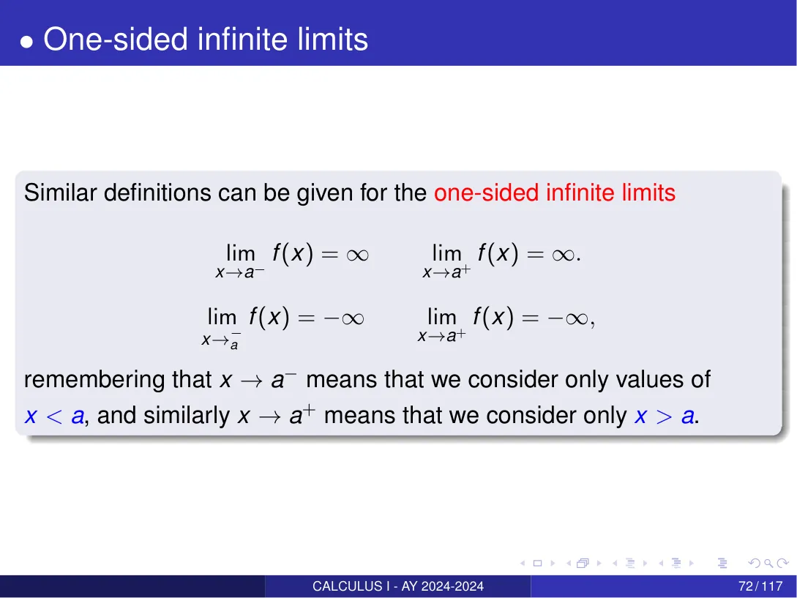
Same idea from one side: $\lim_{x\to a^-}$ and $\lim_{x\to a^+}$ can each be $+\infty$ or $-\infty$. Remember $x\to a^-$ means $x<a$ only, and $x\to a^+$ means $x>a$ only. A vertical asymptote $x=a$ appears when at least one of these is infinite.
Cùng ý tưởng nhưng từ một phía: $\lim_{x\to a^-}$ và $\lim_{x\to a^+}$ đều có thể là $+\infty$ hoặc $-\infty$. Nhớ $x\to a^-$ chỉ gồm $x<a$, còn $x\to a^+$ chỉ gồm $x>a$. Tiệm cận đứng $x=a$ xuất hiện khi ít nhất một trong các giới hạn này là vô cực.
Find $\displaystyle\lim_{x\to1^+}\frac1{x-1}$ and $\displaystyle\lim_{x\to1^-}\frac1{x-1}$.
Tìm $\displaystyle\lim_{x\to1^+}\frac1{x-1}$ và $\displaystyle\lim_{x\to1^-}\frac1{x-1}$.
Answer and solution · Đáp án và lời giải
Answer · Đáp án: $+\infty$ and $-\infty$
For $x$ slightly above $1$, $x-1$ is a small positive number, so the quotient is huge and positive; slightly below $1$ it is huge and negative.
Với $x$ lớn hơn $1$ một chút, $x-1$ là số dương nhỏ nên thương rất lớn và dương; với $x$ nhỏ hơn $1$ một chút thì thương rất lớn và âm.
The four one-sided infinite limits in pictures · Bốn giới hạn vô cực một phía qua hình vẽ
★★ Important · Quan trọng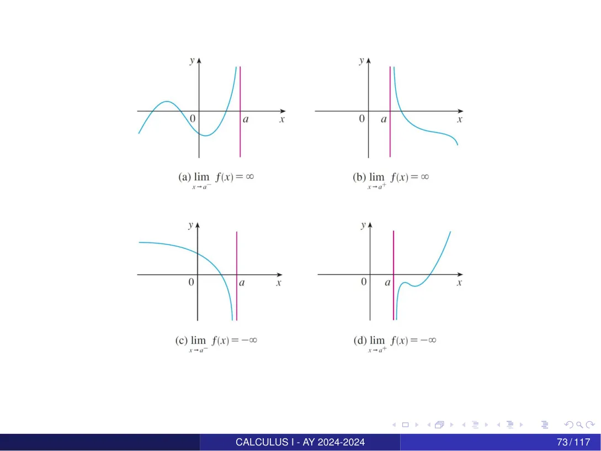
The slide shows four graphs near a vertical line $x=a$: (a) $\lim_{x\to a^-}f=\infty$, (b) $\lim_{x\to a^+}f=\infty$, (c) $\lim_{x\to a^-}f=-\infty$, (d) $\lim_{x\to a^+}f=-\infty$. Ask the student to say, for each picture, which side the curve is on and whether it goes up or down.
Slide cho bốn đồ thị gần đường thẳng đứng $x=a$: (a) $\lim_{x\to a^-}f=\infty$, (b) $\lim_{x\to a^+}f=\infty$, (c) $\lim_{x\to a^-}f=-\infty$, (d) $\lim_{x\to a^+}f=-\infty$. Yêu cầu bạn nói với mỗi hình: đường cong ở phía nào và đi lên hay đi xuống.
Definition of a finite limit at infinity · Định nghĩa giới hạn hữu hạn tại vô cực
★★ Important · Quan trọng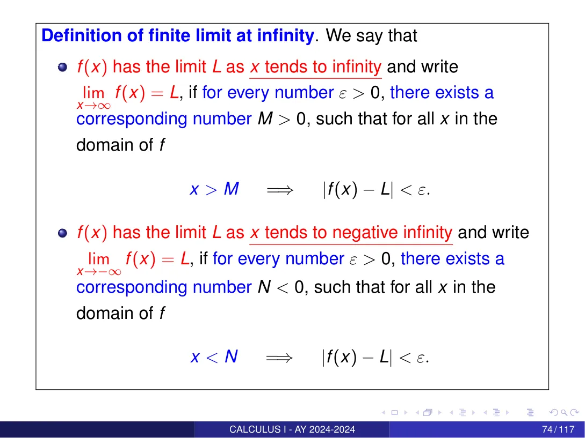
$\lim_{x\to\infty}f(x)=L$ means: for every $\varepsilon>0$ there is an $M>0$ such that $x>M\Rightarrow|f(x)-L|<\varepsilon$. The input condition is now "$x$ is large enough". For $x\to-\infty$ use $x<N$ with $N<0$. The graph then approaches the horizontal line $y=L$.
$\lim_{x\to\infty}f(x)=L$ nghĩa là: với mọi $\varepsilon>0$ tồn tại $M>0$ sao cho $x>M\Rightarrow|f(x)-L|<\varepsilon$. Điều kiện ở đầu vào giờ là "$x$ đủ lớn". Với $x\to-\infty$ dùng $x<N$ với $N<0$. Khi đó đồ thị tiến sát đường ngang $y=L$.
Prove $\displaystyle\lim_{x\to\infty}\frac1x=0$ from the definition.
Chứng minh $\displaystyle\lim_{x\to\infty}\frac1x=0$ từ định nghĩa.
Answer and solution · Đáp án và lời giải
Answer · Đáp án: Choose $M=\dfrac1\varepsilon$.
Given $\varepsilon>0$ let $M=\frac1\varepsilon$. If $x>M$ then $0<\frac1x<\frac1M=\varepsilon$, so $\left|\frac1x-0\right|<\varepsilon$.
Cho $\varepsilon>0$, đặt $M=\frac1\varepsilon$. Nếu $x>M$ thì $0<\frac1x<\frac1M=\varepsilon$, nên $\left|\frac1x-0\right|<\varepsilon$.
Limit laws at infinity and an example · Quy tắc giới hạn tại vô cực và một ví dụ
★★★ Core · Cốt lõi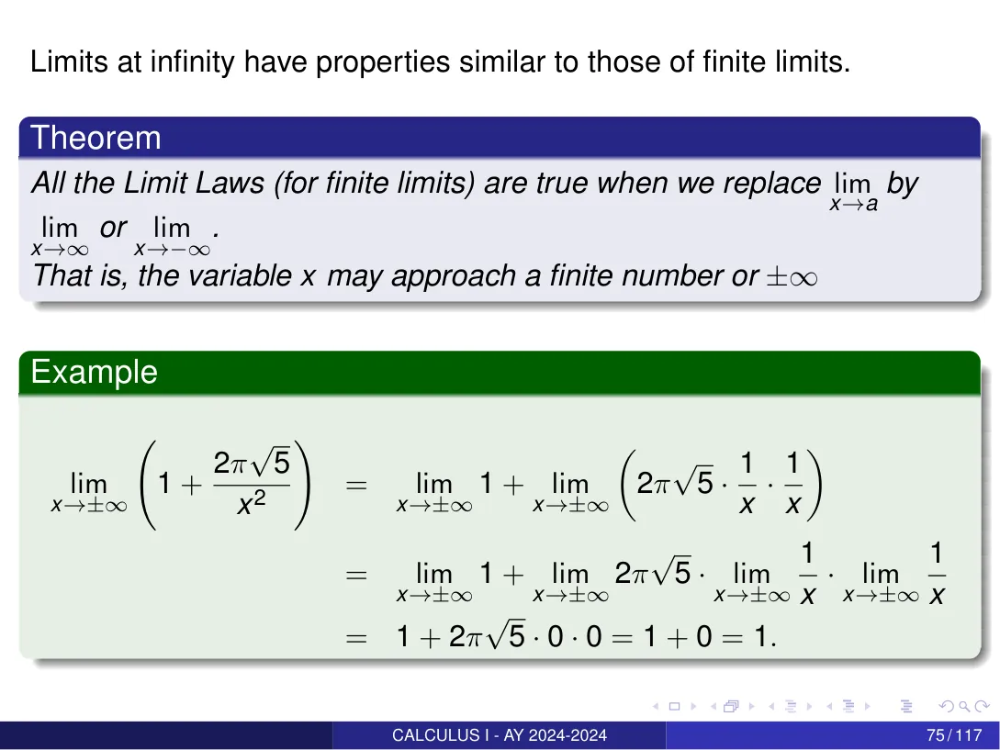
All the limit laws remain true when $x\to a$ is replaced by $x\to\infty$ or $x\to-\infty$. The slide's example: $\lim_{x\to\pm\infty}\left(1+\frac{2\pi\sqrt5}{x^2}\right)=1+2\pi\sqrt5\cdot0\cdot0=1$, using $\frac1x\to0$. Rational functions: divide top and bottom by the highest power of $x$. For $x\to-\infty$ take care with signs, e.g. $\sqrt{x^2}=|x|=-x$.
Mọi quy tắc giới hạn vẫn đúng khi thay $x\to a$ bằng $x\to\infty$ hoặc $x\to-\infty$. Ví dụ trên slide: $\lim_{x\to\pm\infty}\left(1+\frac{2\pi\sqrt5}{x^2}\right)=1+2\pi\sqrt5\cdot0\cdot0=1$, dùng $\frac1x\to0$. Hàm hữu tỉ: chia cả tử và mẫu cho lũy thừa cao nhất của $x$. Khi $x\to-\infty$ cẩn thận về dấu, ví dụ $\sqrt{x^2}=|x|=-x$.
Limits at infinity of rational and algebraic functions are a guaranteed question in tests, and the sign slip at $-\infty$ is the classic mistake.
Giới hạn tại vô cực của hàm hữu tỉ và hàm đại số chắc chắn xuất hiện trong đề, và nhầm dấu tại $-\infty$ là lỗi kinh điển.
Compute $\displaystyle\lim_{x\to\infty}\frac{3x^2-x}{2x^2+5}$.
Tính $\displaystyle\lim_{x\to\infty}\frac{3x^2-x}{2x^2+5}$.
Answer and solution · Đáp án và lời giải
Answer · Đáp án: $\dfrac32$
Divide by $x^2$: $\frac{3-\frac1x}{2+\frac5{x^2}}\to\frac32$.
Chia cho $x^2$: $\frac{3-\frac1x}{2+\frac5{x^2}}\to\frac32$.
Compute $\displaystyle\lim_{x\to-\infty}\frac{2x+1}{\sqrt{x^2+1}}$.
Tính $\displaystyle\lim_{x\to-\infty}\frac{2x+1}{\sqrt{x^2+1}}$.
Answer and solution · Đáp án và lời giải
Answer · Đáp án: $-2$
For $x<0$, $\sqrt{x^2+1}\approx|x|=-x$. Divide top and bottom by $|x|=-x$: the numerator becomes $\frac{2x+1}{-x}=-2-\frac1x\to-2$ and the denominator $\sqrt{1+\frac1{x^2}}\to1$. So the limit is $-2$. (As $x\to+\infty$ the same quotient tends to $+2$.)
Với $x<0$, $\sqrt{x^2+1}\approx|x|=-x$. Chia tử và mẫu cho $|x|=-x$: tử $\frac{2x+1}{-x}=-2-\frac1x\to-2$, mẫu $\sqrt{1+\frac1{x^2}}\to1$. Vậy giới hạn là $-2$. (Khi $x\to+\infty$ cùng thương này tiến tới $+2$.)
Show that $\displaystyle\lim_{x\to\infty}\frac{\sin x}{x}=0$.
Chứng tỏ $\displaystyle\lim_{x\to\infty}\frac{\sin x}{x}=0$.
Answer and solution · Đáp án và lời giải
Answer · Đáp án: squeeze with $\pm\frac1x$
For $x>0$, $-\frac1x\le\frac{\sin x}x\le\frac1x$ and both bounds tend to $0$ (the limit laws cannot be used: $\lim\sin x$ does not exist).
Với $x>0$, $-\frac1x\le\frac{\sin x}x\le\frac1x$ và cả hai cận đều tiến tới $0$ (không dùng được quy tắc giới hạn vì $\lim\sin x$ không tồn tại).
Definition of an infinite limit at infinity · Định nghĩa giới hạn vô cực tại vô cực
★★ Important · Quan trọng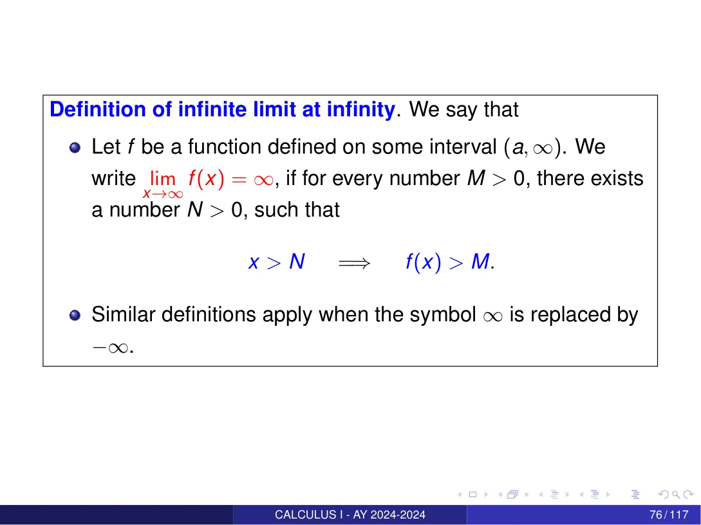
$\lim_{x\to\infty}f(x)=\infty$ means: for every $M>0$ there is an $N>0$ with $x>N\Rightarrow f(x)>M$. Both the input and the output conditions are now "large". Similar definitions hold with $-\infty$.
$\lim_{x\to\infty}f(x)=\infty$ nghĩa là: với mọi $M>0$ tồn tại $N>0$ sao cho $x>N\Rightarrow f(x)>M$. Cả điều kiện ở đầu vào lẫn đầu ra giờ đều là "lớn". Các định nghĩa tương tự đúng với $-\infty$.
Find $\displaystyle\lim_{x\to\infty}(x^3-5x)$ and $\displaystyle\lim_{x\to-\infty}(x^3-5x)$.
Tìm $\displaystyle\lim_{x\to\infty}(x^3-5x)$ và $\displaystyle\lim_{x\to-\infty}(x^3-5x)$.
Answer and solution · Đáp án và lời giải
Answer · Đáp án: $+\infty$ and $-\infty$
Factor the dominant term: $x^3-5x=x^3\left(1-\frac5{x^2}\right)$ and the bracket tends to $1$, while $x^3\to\pm\infty$ with the sign of $x$.
Đặt thừa số trội: $x^3-5x=x^3\left(1-\frac5{x^2}\right)$ và thừa số trong ngoặc tiến tới $1$, còn $x^3\to\pm\infty$ cùng dấu với $x$.
Pictures: $\lim f=\infty$ at infinity and the cubic · Hình vẽ: $\lim f=\infty$ tại vô cực và hàm bậc ba
★★ Important · Quan trọng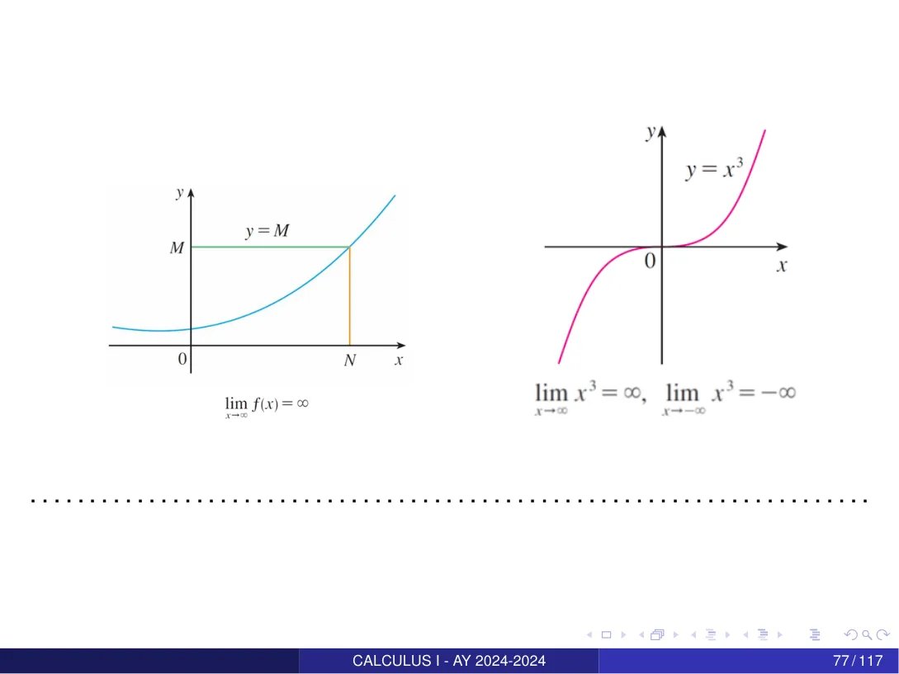
Left picture: the graph climbs past any horizontal level $y=M$ once $x$ exceeds some $N$. Right picture: $y=x^3$ has $\lim_{x\to\infty}x^3=\infty$ and $\lim_{x\to-\infty}x^3=-\infty$. The dotted line closes the self-study section.
Hình trái: đồ thị vượt qua mọi mức ngang $y=M$ khi $x$ vượt quá một số $N$. Hình phải: $y=x^3$ có $\lim_{x\to\infty}x^3=\infty$ và $\lim_{x\to-\infty}x^3=-\infty$. Đường chấm chấm khép lại phần tự học.
Applications of limits in real life · Ứng dụng của giới hạn trong đời sống
★ Context · Bổ trợ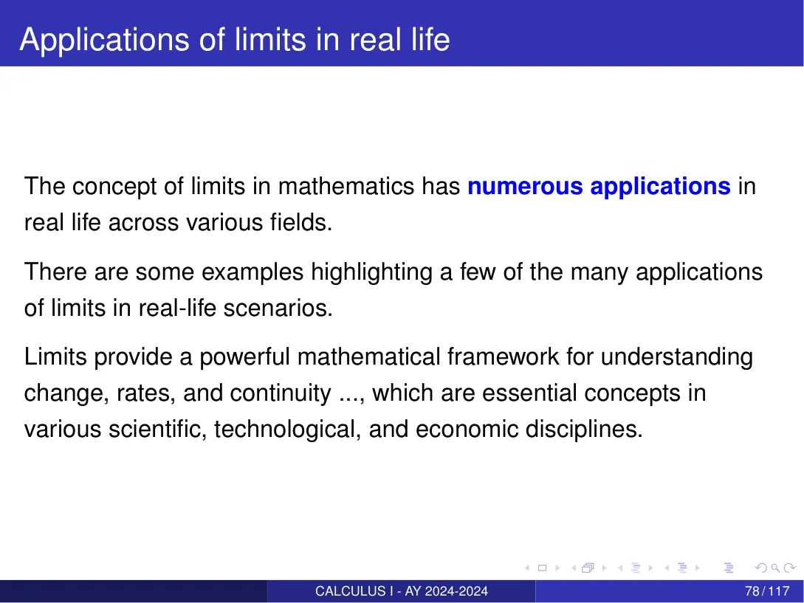
Motivation only: limits give a framework for change, rates and continuity, which matter in science, technology and economics. Read it out in one minute and move on.
Chỉ là động lực: giới hạn cho một khung toán học để nói về sự thay đổi, tốc độ và tính liên tục, những khái niệm quan trọng trong khoa học, công nghệ và kinh tế. Đọc lướt một phút rồi đi tiếp.
Physics and engineering · Vật lý và kỹ thuật
★ Context · Bổ trợ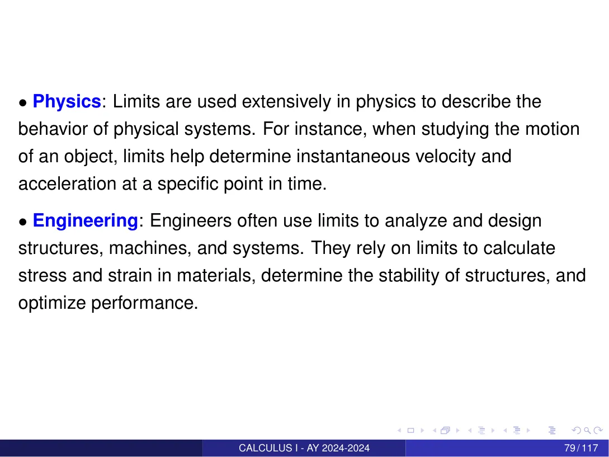
Physics: instantaneous velocity and acceleration are limits. Engineering: stress and strain, stability and optimisation. Connect to the student's own course (Physics) if they ask.
Vật lý: vận tốc tức thời và gia tốc là các giới hạn. Kỹ thuật: ứng suất và biến dạng, độ ổn định và tối ưu hóa. Liên hệ với môn Vật lý của bạn nếu bạn hỏi.
Computer science and data analysis · Khoa học máy tính và phân tích dữ liệu
★ Context · Bổ trợ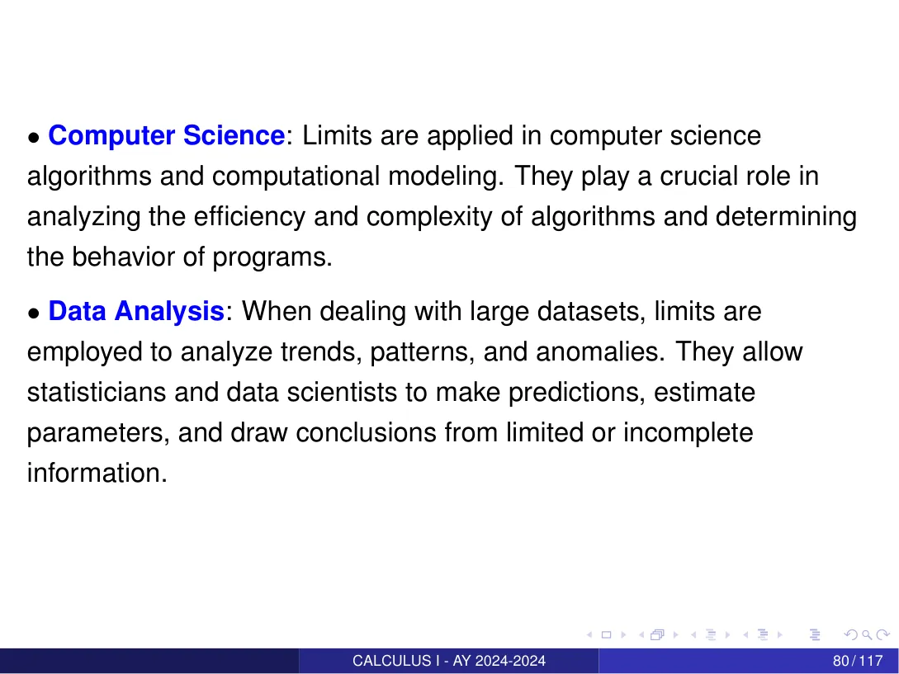
Computer science: efficiency and complexity of algorithms are limits as the input size grows. Data analysis: trends, estimation and prediction from large datasets.
Khoa học máy tính: hiệu quả và độ phức tạp của thuật toán là các giới hạn khi kích thước đầu vào tăng. Phân tích dữ liệu: xu hướng, ước lượng và dự đoán từ dữ liệu lớn.
Probability, statistics and medicine · Xác suất, thống kê và y học
★ Context · Bổ trợ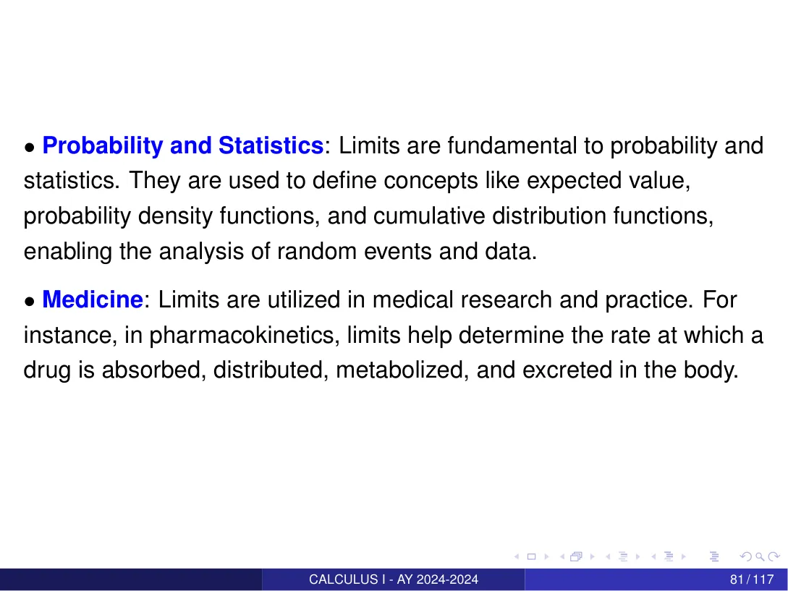
Probability and statistics: expected value, density functions and cumulative distributions are defined with limits (and integrals). Medicine: pharmacokinetics, the rate at which a drug is absorbed and removed.
Xác suất và thống kê: kỳ vọng, hàm mật độ và hàm phân phối tích lũy được định nghĩa bằng giới hạn (và tích phân). Y học: dược động học, tốc độ thuốc được hấp thụ và thải ra.
Finance and economics · Tài chính và kinh tế
★ Context · Bổ trợ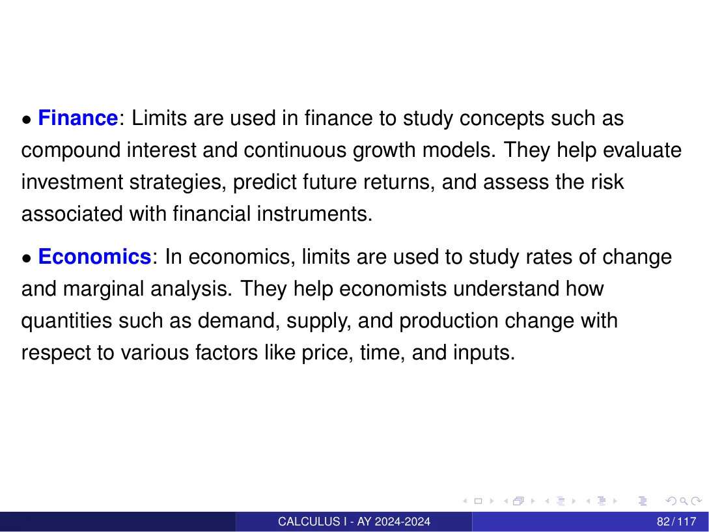
Finance: compound interest and continuous growth models (the number $e$ is a limit). Economics: marginal analysis, how demand, supply and production change with price, time and inputs.
Tài chính: lãi kép và mô hình tăng trưởng liên tục (số $e$ là một giới hạn). Kinh tế: phân tích biên, cách cầu, cung và sản lượng thay đổi theo giá, thời gian và đầu vào.
Roadmap: now continuity · Lộ trình: bây giờ là tính liên tục
★ Context · Bổ trợ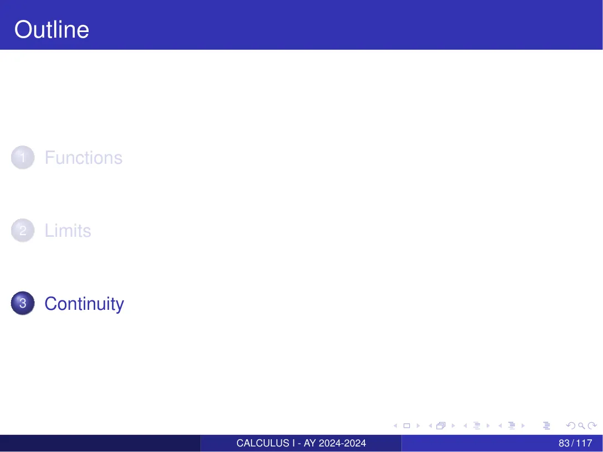
Outline again, now at part 3. Say: continuity is where limits finally turn into a property of functions that we use constantly.
Lại là lộ trình, nay ở phần 3. Nói: tính liên tục là nơi giới hạn cuối cùng trở thành một tính chất của hàm số mà ta dùng liên tục.
What the continuity section covers · Phần tính liên tục gồm những gì
★ Context · Bổ trợ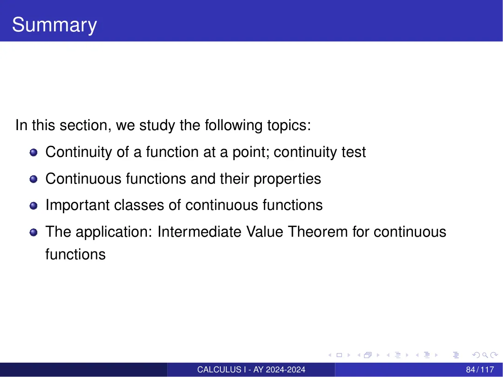
Topics: continuity at a point and the continuity test; continuous functions and their properties; important classes of continuous functions; and the application, the Intermediate Value Theorem.
Các chủ đề: liên tục tại một điểm và phép thử liên tục; hàm liên tục và các tính chất; các lớp hàm liên tục quan trọng; và ứng dụng là định lý giá trị trung gian.
Observation: limit = value for many functions · Quan sát: với nhiều hàm, giới hạn bằng giá trị
★★ Important · Quan trọng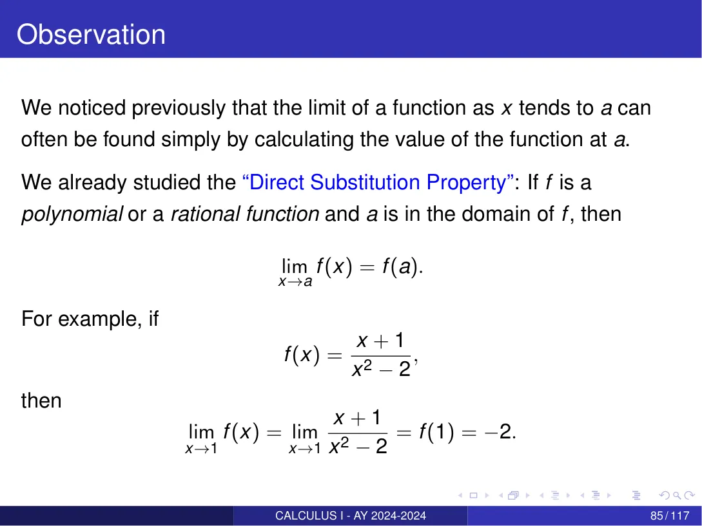
For polynomials and rational functions we computed limits just by evaluating at $a$. Example: $f(x)=\frac{x+1}{x^2-2}$ gives $\lim_{x\to1}f(x)=f(1)=\frac{2}{-1}=-2$. Such functions are very special: they are the continuous ones.
Với đa thức và hàm hữu tỉ ta tính giới hạn chỉ bằng cách thế vào $a$. Ví dụ: $f(x)=\frac{x+1}{x^2-2}$ cho $\lim_{x\to1}f(x)=f(1)=\frac{2}{-1}=-2$. Những hàm như vậy rất đặc biệt: chúng chính là các hàm liên tục.
Compute $\displaystyle\lim_{x\to2}\frac{x+1}{x^2-2}$ by direct substitution.
Tính $\displaystyle\lim_{x\to2}\frac{x+1}{x^2-2}$ bằng cách thế trực tiếp.
Answer and solution · Đáp án và lời giải
Answer · Đáp án: $\dfrac32$
The denominator at $2$ is $2\ne0$, so $f(2)=\frac{3}{2}$.
Mẫu tại $2$ bằng $2\ne0$ nên $f(2)=\frac32$.
Definition of continuity · Định nghĩa tính liên tục
★★★ Core · Cốt lõi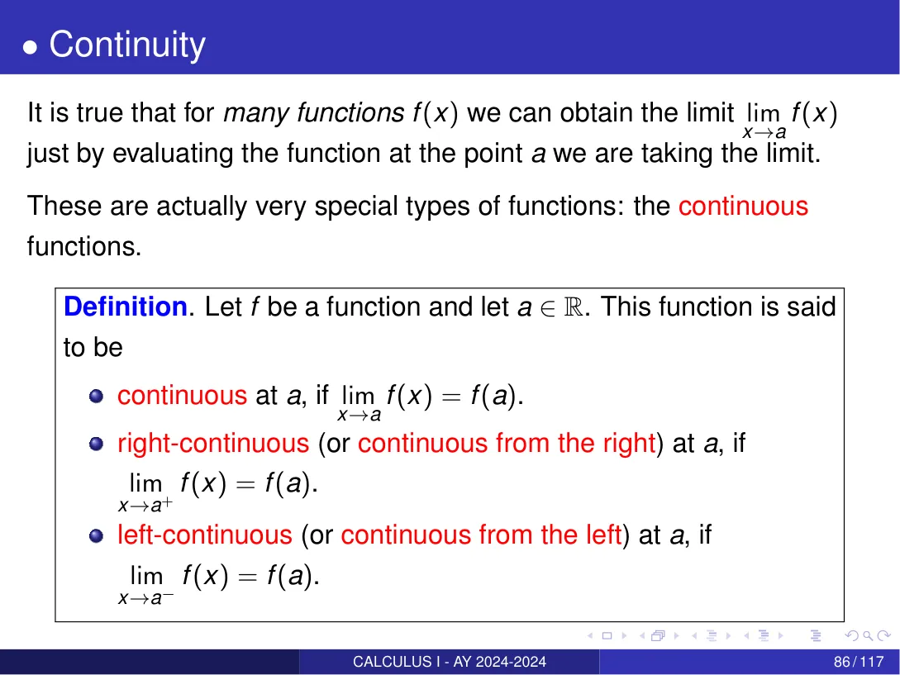
$f$ is continuous at $a$ if $\lim_{x\to a}f(x)=f(a)$. Right-continuous at $a$ if $\lim_{x\to a^+}f(x)=f(a)$; left-continuous if $\lim_{x\to a^-}f(x)=f(a)$. The one equation hides three facts: $f(a)$ exists, the limit exists, and they are equal.
$f$ liên tục tại $a$ nếu $\lim_{x\to a}f(x)=f(a)$. Liên tục bên phải tại $a$ nếu $\lim_{x\to a^+}f(x)=f(a)$; liên tục bên trái nếu $\lim_{x\to a^-}f(x)=f(a)$. Một đẳng thức ẩn chứa ba điều: $f(a)$ tồn tại, giới hạn tồn tại, và chúng bằng nhau.
Continuity is the hypothesis of the Intermediate Value Theorem, of the Extreme Value Theorem and of the Fundamental Theorem of Calculus: you cannot use those theorems without checking it.
Liên tục là giả thiết của định lý giá trị trung gian, định lý giá trị cực trị và định lý cơ bản của giải tích: không kiểm tra điều này thì không được dùng các định lý đó.
Is $f(x)=|x|$ continuous at $0$? Is $g(x)=\sqrt x$ right-continuous at $0$?
$f(x)=|x|$ có liên tục tại $0$ không? $g(x)=\sqrt x$ có liên tục bên phải tại $0$ không?
Answer and solution · Đáp án và lời giải
Answer · Đáp án: yes; yes
$\lim_{x\to0}|x|=0=f(0)$. And $\lim_{x\to0^+}\sqrt x=0=g(0)$ ($g$ is not defined for $x<0$, so only one-sided continuity makes sense at $0$).
$\lim_{x\to0}|x|=0=f(0)$. Và $\lim_{x\to0^+}\sqrt x=0=g(0)$ ($g$ không xác định với $x<0$ nên tại $0$ chỉ có ý nghĩa nói về liên tục một phía).
The intuition and the three picture cases · Trực giác và ba trường hợp trong hình
★★★ Core · Cốt lõi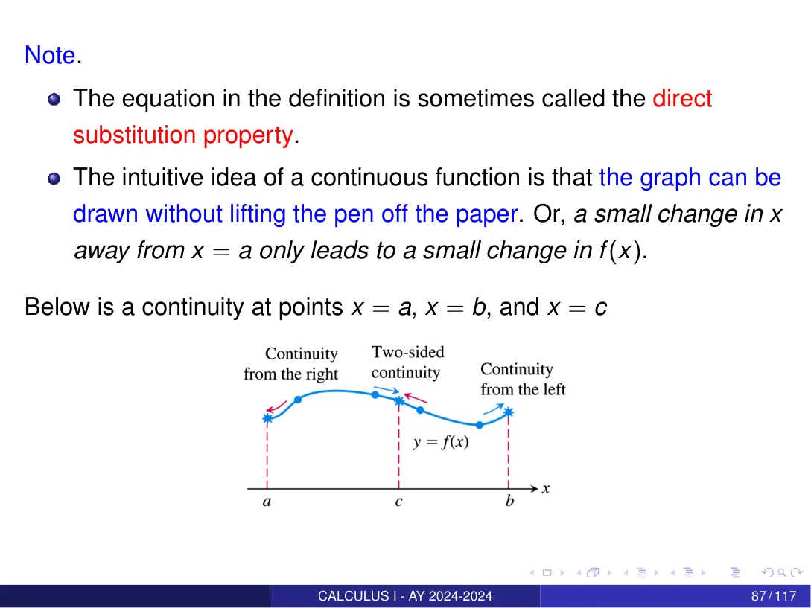
Intuition: a continuous graph can be drawn without lifting the pen; a small change in $x$ gives only a small change in $f(x)$. The picture shows continuity from the right at $a$, two-sided continuity at $c$, and continuity from the left at $b$.
Trực giác: đồ thị liên tục có thể vẽ mà không nhấc bút; thay đổi nhỏ của $x$ chỉ gây thay đổi nhỏ của $f(x)$. Hình cho thấy liên tục bên phải tại $a$, liên tục hai phía tại $c$ và liên tục bên trái tại $b$.
Picture: not continuous at $x=1,2,4$ · Hình: không liên tục tại $x=1,2,4$
★★ Important · Quan trọng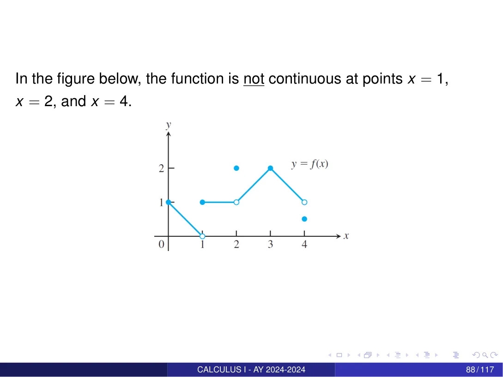
Read the graph. At $x=1$ the graph jumps from height $0$ (left, open circle) to height $1$ (right, filled point): the left and right limits differ. At $x=2$ the curve has a hole at height $1$ but the function value is $2$. At $x=4$, at the right end of the graph, the left limit is $1$ but $f(4)$ is lower. Each failure breaks a different part of the definition.
Đọc đồ thị. Tại $x=1$ đồ thị nhảy từ độ cao $0$ (bên trái, vòng tròn rỗng) lên độ cao $1$ (bên phải, điểm đặc): giới hạn trái và phải khác nhau. Tại $x=2$ đường cong có một lỗ ở độ cao $1$ nhưng giá trị hàm là $2$. Tại $x=4$, ở đầu mút phải của đồ thị, giới hạn trái là $1$ nhưng $f(4)$ thấp hơn. Mỗi chỗ hỏng phá vỡ một phần khác nhau của định nghĩa.
Example: $\sqrt{4-x^2}$ on $[-2,2]$ · Ví dụ: $\sqrt{4-x^2}$ trên $[-2,2]$
★★ Important · Quan trọng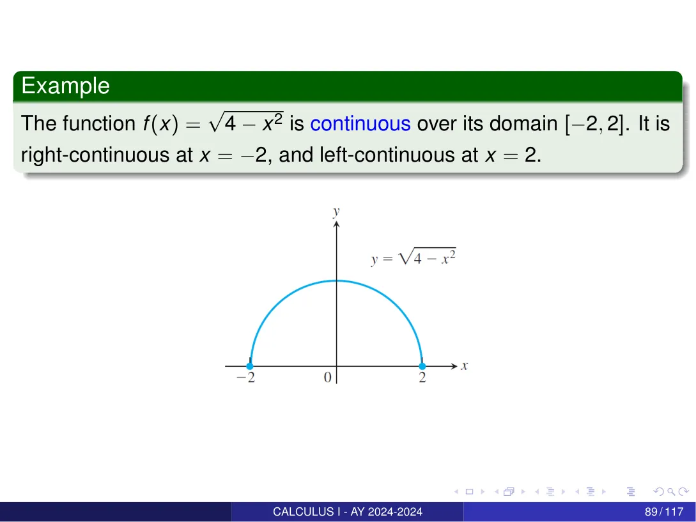
$f(x)=\sqrt{4-x^2}$ is continuous on its whole domain $[-2,2]$: it is right-continuous at $x=-2$ and left-continuous at $x=2$ (at an endpoint only the side inside the domain exists). The graph is the upper half of a circle of radius $2$.
$f(x)=\sqrt{4-x^2}$ liên tục trên toàn bộ tập xác định $[-2,2]$: nó liên tục bên phải tại $x=-2$ và liên tục bên trái tại $x=2$ (tại đầu mút chỉ có phía nằm trong tập xác định). Đồ thị là nửa trên đường tròn bán kính $2$.
Find the domain of $f(x)=\sqrt{9-x^2}$ and say where it is continuous.
Tìm tập xác định của $f(x)=\sqrt{9-x^2}$ và cho biết nó liên tục ở đâu.
Answer and solution · Đáp án và lời giải
Answer · Đáp án: domain $[-3,3]$; continuous on $[-3,3]$ (one-sided at $\pm3$)
$9-x^2\ge0\iff|x|\le3$. The function is continuous at every point of its domain, with one-sided continuity at the endpoints.
$9-x^2\ge0\iff|x|\le3$. Hàm liên tục tại mọi điểm của tập xác định, với liên tục một phía tại hai đầu mút.
The continuity test · Phép thử liên tục
★★★ Core · Cốt lõi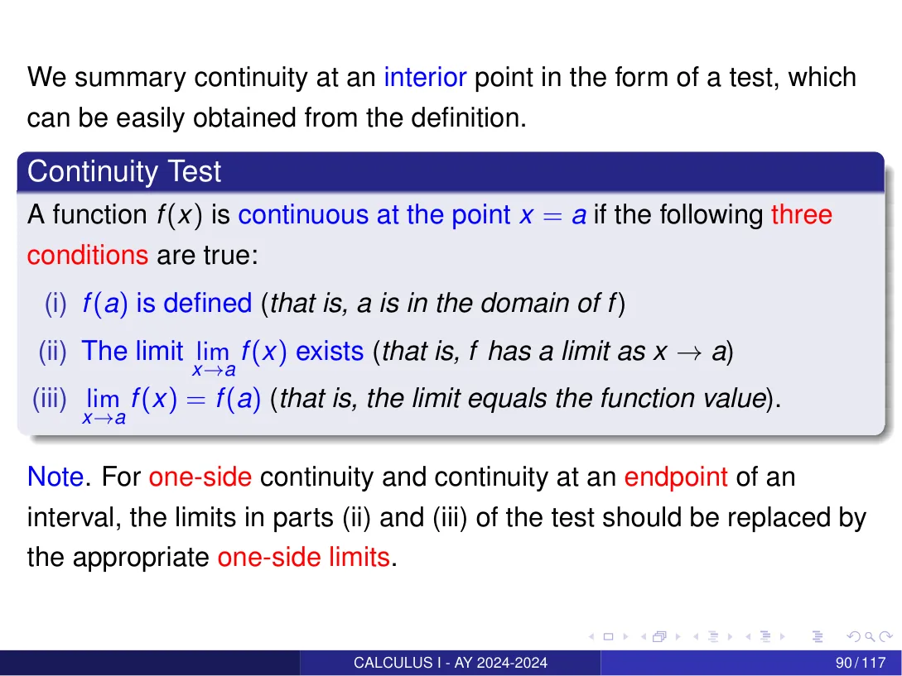
Three conditions at $x=a$: (i) $f(a)$ is defined; (ii) $\lim_{x\to a}f(x)$ exists; (iii) the limit equals $f(a)$. Check them in this order; the first one that fails tells you why $f$ is discontinuous. At an endpoint, use the one-sided limit.
Ba điều kiện tại $x=a$: (i) $f(a)$ xác định; (ii) $\lim_{x\to a}f(x)$ tồn tại; (iii) giới hạn bằng $f(a)$. Kiểm tra theo thứ tự này; điều kiện đầu tiên sai cho biết vì sao $f$ gián đoạn. Tại đầu mút, dùng giới hạn một phía.
Let $f(x)=\dfrac{x^2-1}{x-1}$ for $x\ne1$ and $f(1)=3$. Is $f$ continuous at $1$? What value of $f(1)$ would make it continuous?
Cho $f(x)=\dfrac{x^2-1}{x-1}$ với $x\ne1$ và $f(1)=3$. $f$ có liên tục tại $1$ không? Giá trị $f(1)$ nào làm nó liên tục?
Answer and solution · Đáp án và lời giải
Answer · Đáp án: not continuous; $f(1)=2$ would fix it
(i) $f(1)=3$ is defined; (ii) $\frac{x^2-1}{x-1}=x+1\to2$; (iii) $2\ne3$. Condition (iii) fails. Setting $f(1)=2$ repairs it.
(i) $f(1)=3$ xác định; (ii) $\frac{x^2-1}{x-1}=x+1\to2$; (iii) $2\ne3$. Điều kiện (iii) sai. Đặt $f(1)=2$ thì sửa được.
Discontinuity and why it happens · Gián đoạn và nguyên nhân
★★★ Core · Cốt lõi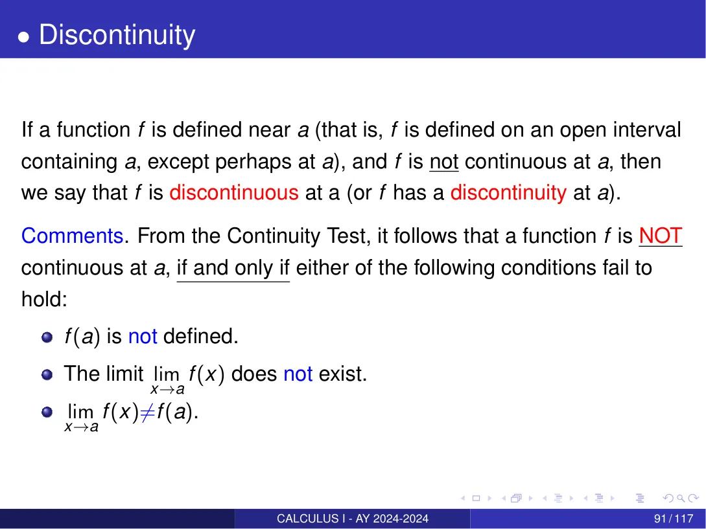
If $f$ is defined near $a$ but not continuous at $a$, it is discontinuous there. From the test, exactly one of three things goes wrong: $f(a)$ is not defined, or $\lim_{x\to a}f(x)$ does not exist, or the limit differs from $f(a)$.
Nếu $f$ xác định gần $a$ nhưng không liên tục tại $a$ thì $f$ gián đoạn tại đó. Theo phép thử, đúng một trong ba điều xảy ra: $f(a)$ không xác định, hoặc $\lim_{x\to a}f(x)$ không tồn tại, hoặc giới hạn khác $f(a)$.
Where are $f(x)=\dfrac1{x-3}$ and $g(x)=\dfrac{x^2-9}{x-3}$ discontinuous, and which condition of the test fails?
$f(x)=\dfrac1{x-3}$ và $g(x)=\dfrac{x^2-9}{x-3}$ gián đoạn ở đâu và điều kiện nào của phép thử bị sai?
Answer and solution · Đáp án và lời giải
Answer · Đáp án: both at $x=3$; $f$: no limit (infinite); $g$: undefined but the limit is $6$
At $3$ neither is defined, so (i) fails. For $f$ the limit is infinite, so (ii) fails too. For $g=x+3$ ($x\ne3$) the limit exists and equals $6$: only the value is missing.
Tại $3$ cả hai đều không xác định nên (i) sai. Với $f$ giới hạn là vô cực nên (ii) cũng sai. Với $g=x+3$ ($x\ne3$) giới hạn tồn tại và bằng $6$: chỉ thiếu giá trị của hàm.
Exercise: find the discontinuities in a graph · Bài tập: tìm các điểm gián đoạn trên đồ thị
★★★ Core · Cốt lõi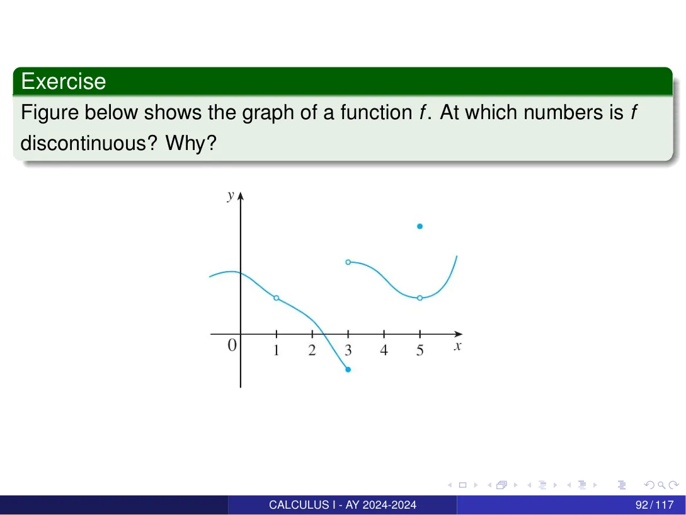
Walk through the graph with the student. $x=1$: an open circle on the curve, so $f(1)$ is not defined (condition (i) fails). $x=3$: the left part ends at a filled point below the axis and the right part starts at a higher open circle: the one-sided limits differ, so the limit does not exist (condition (ii) fails). $x=5$: the curve has a hole at one height, but the filled point $f(5)$ sits much higher: the limit exists but is not $f(5)$ (condition (iii) fails). So $f$ is discontinuous at $1$, $3$ and $5$.
Cùng bạn đi qua đồ thị. $x=1$: vòng tròn rỗng trên đường cong nên $f(1)$ không xác định (điều kiện (i) sai). $x=3$: phần bên trái kết thúc tại điểm đặc dưới trục hoành, phần bên phải bắt đầu từ vòng tròn rỗng cao hơn: hai giới hạn một phía khác nhau nên giới hạn không tồn tại (điều kiện (ii) sai). $x=5$: đường cong có một lỗ ở một độ cao, nhưng điểm đặc $f(5)$ nằm cao hơn nhiều: giới hạn tồn tại nhưng không bằng $f(5)$ (điều kiện (iii) sai). Vậy $f$ gián đoạn tại $1$, $3$ và $5$.
Removable discontinuity · Gián đoạn bỏ được
★★★ Core · Cốt lõi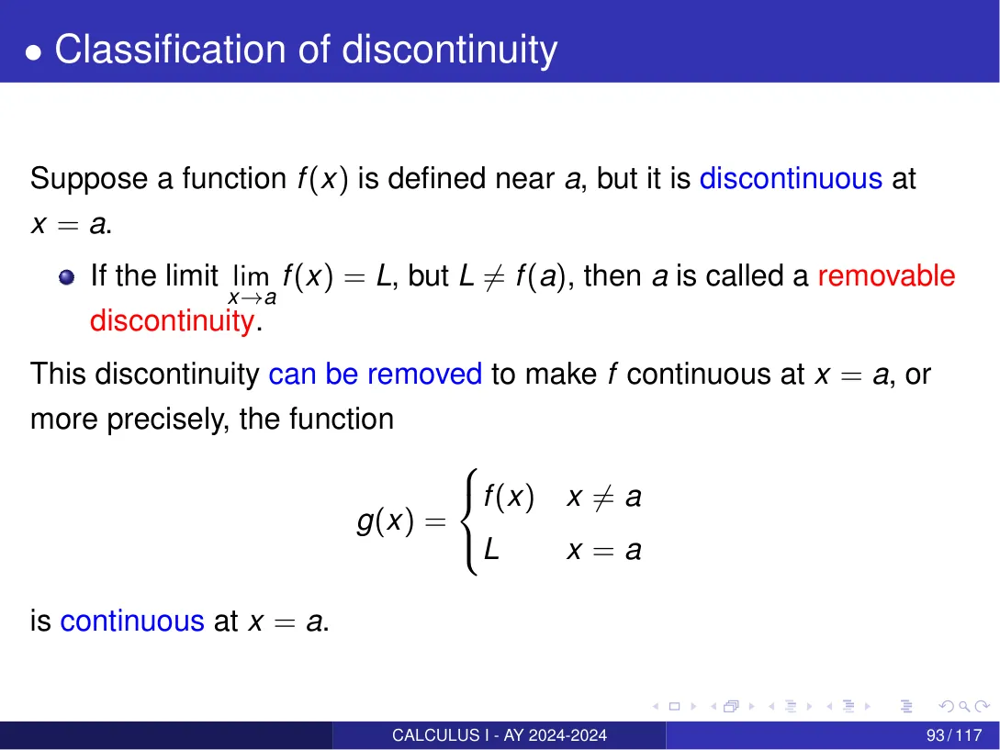
If $\lim_{x\to a}f(x)=L$ exists but $L\ne f(a)$ (or $f(a)$ is undefined), the discontinuity is removable: redefine the value at $a$ as $L$ and the new function $g$ is continuous. The "hole" can be filled.
Nếu $\lim_{x\to a}f(x)=L$ tồn tại nhưng $L\ne f(a)$ (hoặc $f(a)$ không xác định) thì gián đoạn là bỏ được: định nghĩa lại giá trị tại $a$ bằng $L$ thì hàm mới $g$ liên tục. "Cái lỗ" có thể được lấp lại.
Let $f(x)=\dfrac{x^3-8}{x-2}$ for $x\ne2$. What value $a=f(2)$ makes $f$ continuous at $2$?
Cho $f(x)=\dfrac{x^3-8}{x-2}$ với $x\ne2$. Giá trị $a=f(2)$ nào làm $f$ liên tục tại $2$?
Answer and solution · Đáp án và lời giải
Answer · Đáp án: $a=12$
$\frac{x^3-8}{x-2}=x^2+2x+4\to4+4+4=12$ as $x\to2$, so define $f(2)=12$.
$\frac{x^3-8}{x-2}=x^2+2x+4\to4+4+4=12$ khi $x\to2$, nên đặt $f(2)=12$.
Picture of a removable discontinuity · Hình của gián đoạn bỏ được
★★ Important · Quan trọng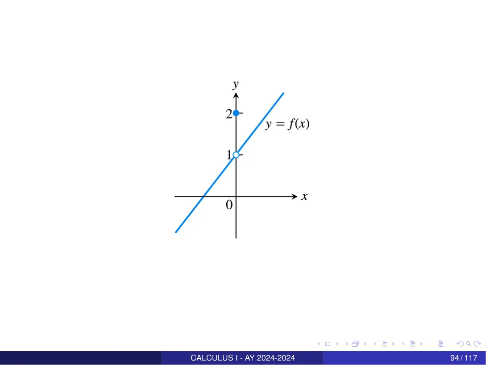
The graph is a straight line with an open circle at $(0,1)$ and a filled point at $(0,2)$: the limit at $0$ is $1$ but $f(0)=2$. Redefine $f(0)=1$ and the line is whole again.
Đồ thị là một đường thẳng có vòng tròn rỗng tại $(0,1)$ và điểm đặc tại $(0,2)$: giới hạn tại $0$ là $1$ nhưng $f(0)=2$. Đặt lại $f(0)=1$ thì đường thẳng lại liền nét.
Jump discontinuity · Gián đoạn bước nhảy
★★★ Core · Cốt lõi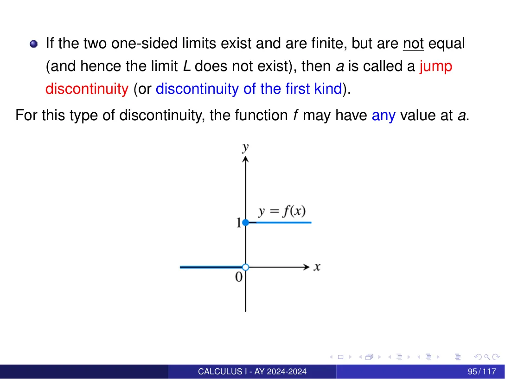
If both one-sided limits exist and are finite but different, then $a$ is a jump discontinuity (first kind). The value $f(a)$ can be anything; the jump cannot be repaired by changing one value. The Heaviside function at $0$ is the model.
Nếu cả hai giới hạn một phía tồn tại, hữu hạn nhưng khác nhau thì $a$ là điểm gián đoạn bước nhảy (loại một). Giá trị $f(a)$ có thể là bất kỳ; không sửa được bằng cách đổi một giá trị. Hàm Heaviside tại $0$ là ví dụ mẫu.
Find the one-sided limits of $f(x)=\dfrac{x^2-4}{|x-2|}$ at $2$ and give the size of the jump.
Tìm các giới hạn một phía của $f(x)=\dfrac{x^2-4}{|x-2|}$ tại $2$ và cho biết độ lớn bước nhảy.
Answer and solution · Đáp án và lời giải
Answer · Đáp án: right $4$, left $-4$, jump $8$
For $x>2$: $\frac{(x-2)(x+2)}{x-2}=x+2\to4$. For $x<2$: $|x-2|=-(x-2)$ so the quotient is $-(x+2)\to-4$. Jump $=4-(-4)=8$.
Với $x>2$: $\frac{(x-2)(x+2)}{x-2}=x+2\to4$. Với $x<2$: $|x-2|=-(x-2)$ nên thương là $-(x+2)\to-4$. Bước nhảy $=4-(-4)=8$.
Essential discontinuity · Gián đoạn cốt yếu
★★★ Core · Cốt lõi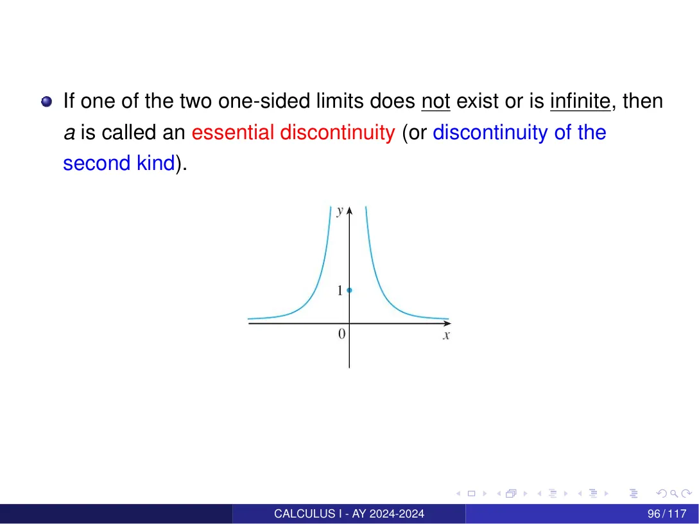
If at least one one-sided limit does not exist or is infinite, $a$ is an essential discontinuity (second kind): a vertical asymptote such as $\frac1x$ at $0$, or wild oscillation such as $\sin\frac1x$ at $0$. Nothing can be redefined to fix it.
Nếu ít nhất một giới hạn một phía không tồn tại hoặc bằng vô cực thì $a$ là điểm gián đoạn cốt yếu (loại hai): tiệm cận đứng như $\frac1x$ tại $0$, hoặc dao động mạnh như $\sin\frac1x$ tại $0$. Không có cách nào định nghĩa lại để sửa.
Classify the discontinuity of $\dfrac1x$ and of $\sin\dfrac1x$ at $0$.
Phân loại điểm gián đoạn của $\dfrac1x$ và của $\sin\dfrac1x$ tại $0$.
Answer and solution · Đáp án và lời giải
Answer · Đáp án: both essential
$\frac1x\to+\infty$ from the right (infinite limit). $\sin\frac1x$ oscillates between $-1$ and $1$ infinitely often, so neither one-sided limit exists.
$\frac1x\to+\infty$ từ bên phải (giới hạn vô cực). $\sin\frac1x$ dao động giữa $-1$ và $1$ vô số lần, nên không tồn tại giới hạn một phía nào.
Exercise: classify three discontinuities at $x_0=1$ · Bài tập: phân loại ba điểm gián đoạn tại $x_0=1$
★★★ Core · Cốt lõi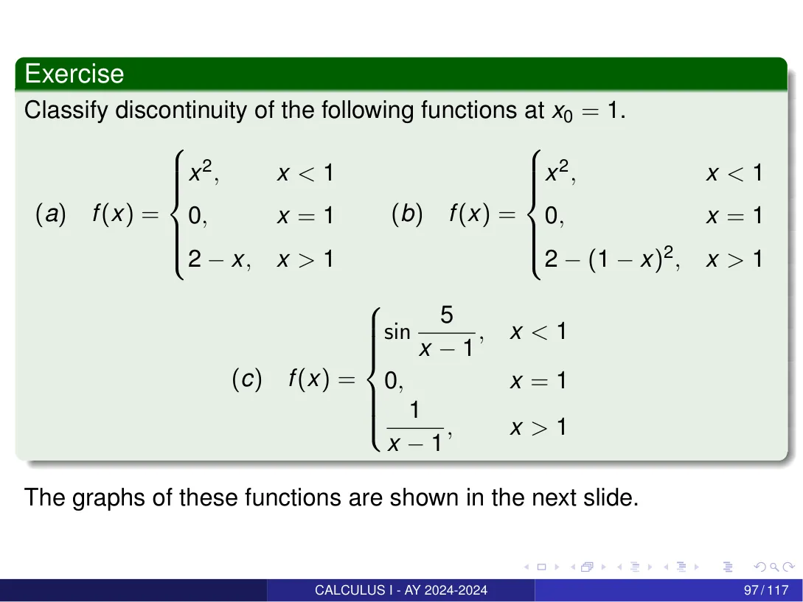
(a) $f=x^2$ for $x<1$, $0$ at $1$, $2-x$ for $x>1$: left limit $1$, right limit $2-1=1$, so $\lim f=1\ne f(1)=0$: removable. (b) $f=x^2$ for $x<1$, $0$ at $1$, $2-(1-x)^2$ for $x>1$: left limit $1$, right limit $2-0=2$: jump. (c) $\sin\frac5{x-1}$ for $x<1$, $0$ at $1$, $\frac1{x-1}$ for $x>1$: the left side oscillates (no limit) and the right side tends to $+\infty$: essential.
(a) $f=x^2$ khi $x<1$, $0$ tại $1$, $2-x$ khi $x>1$: giới hạn trái $1$, giới hạn phải $2-1=1$, nên $\lim f=1\ne f(1)=0$: bỏ được. (b) $f=x^2$ khi $x<1$, $0$ tại $1$, $2-(1-x)^2$ khi $x>1$: giới hạn trái $1$, giới hạn phải $2-0=2$: bước nhảy. (c) $\sin\frac5{x-1}$ khi $x<1$, $0$ tại $1$, $\frac1{x-1}$ khi $x>1$: bên trái dao động (không có giới hạn), bên phải tiến tới $+\infty$: cốt yếu.
Classify the discontinuity at $x_0=2$ of $f(x)=\dfrac{x^2-4}{x-2}$ ($x\ne2$), $f(2)=5$.
Phân loại điểm gián đoạn tại $x_0=2$ của $f(x)=\dfrac{x^2-4}{x-2}$ ($x\ne2$), $f(2)=5$.
Answer and solution · Đáp án và lời giải
Answer · Đáp án: removable (limit $4\ne5$)
$\frac{x^2-4}{x-2}=x+2\to4$, a finite limit different from $f(2)=5$.
$\frac{x^2-4}{x-2}=x+2\to4$, giới hạn hữu hạn khác $f(2)=5$.
Classify the discontinuity at $2$ of $g(x)=\dfrac{|x-2|}{x-2}$ and of $h(x)=\dfrac1{(x-2)^2}$.
Phân loại điểm gián đoạn tại $2$ của $g(x)=\dfrac{|x-2|}{x-2}$ và của $h(x)=\dfrac1{(x-2)^2}$.
Answer and solution · Đáp án và lời giải
Answer · Đáp án: $g$: jump; $h$: essential
$g$ has one-sided limits $1$ and $-1$ (finite, different). $h\to+\infty$ from both sides (infinite).
$g$ có hai giới hạn một phía $1$ và $-1$ (hữu hạn, khác nhau). $h\to+\infty$ từ cả hai phía (vô cực).
The three graphs of the classification exercise · Ba đồ thị của bài tập phân loại
★★ Important · Quan trọngThe slide draws the three functions of the previous exercise: (a) a hole with a displaced point, (b) a jump, (c) an oscillating left side and a vertical asymptote on the right. Ask the student to match each picture with its type: removable, jump, essential.
Slide vẽ ba hàm của bài tập trước: (a) một lỗ với điểm bị dời chỗ, (b) một bước nhảy, (c) bên trái dao động và bên phải có tiệm cận đứng. Yêu cầu bạn ghép mỗi hình với loại của nó: bỏ được, bước nhảy, cốt yếu.